Introduction
Data Analysis is process of extracting information from raw data. It aims to build a model with predictive power. In parallel, data visualization aims to present the data graphically for you to easily understanding their meaning. At the end of data analysis, you could have a model and a set of graphical displays that allow you to predict the responses given the inputs.
To undertake data analysis, you need these knowledge:
- Programming (in Python, R or Matlab), e.g., Web Scraping which allows the collection of data through the recognition of specific occurrence of HTML tags within the web page.
- Mathematics and Statistics: in particular, Bayesian, regression and clustering.
- Machine Learning and Artificial Intelligence.
- Domain knowledge on the field under study.
Tools and Packages
Jupyter Notebook
Jupyter Notebook is great tool for data analysis under Python, which bundled with all the Python data analytics packages. Read "Jupyter Notebook" on how to install and get started.
SciPy
SciPy (@ https://www.scipy.org) is a set of open-source Python libraries specialized for mathematics, science and engineering. It consists of the many Python packages.
We will use the following packages for data analysis:
- NumPy (@ http://www.numpy.org/): the fundamental package for numerical computation. It defines the n-dimensional array (
ndarray) and its basic operations. - Pandas (@ http://pandas.pydata.org/): provides a high-performance, easy-to-use 2D tabular data structures (
DataFrame) and its analysis. - Matplotlib (@ https://matplotlib.org/): supports comprehensive 2D Plotting and rudimentary 3D plotting.
- scikit-learn (@ https://scikit-learn.org/stable/) is a collection of algorithms and tools for machine learning.
- Jupyter Notebook (@ http://jupyter.org/): An webapp allows you to document your computation in an easily reproducible form.
In addition, SciPy also includes:
- SciPy Library (@ https://www.scipy.org/scipylib/index.html): a collection of numerical algorithms and domain-specific toolboxes, including signal processing, optimization, statistics and more.
- SymPy (@ https://www.sympy.org/en/index.html): symbolic mathematics and algebra.
- scikit-image (@ https://scikit-image.org/) is a collection of algorithms for image processing.
- Nose (@ https://nose.readthedocs.io/en/latest/): a framework for testing Python code, being phased out in preference for pytest (@ https://docs.pytest.org/en/latest/).
- h5py (@ http://www.h5py.org/) and PyTables (@ http://www.pytables.org/) can both access data stored in the HDF5 format.
Installation
(For Windows/Mac/Ubuntu) I suggest that you install Jupyter Notebook (via Python 3's Anaconda distribution), which bundles with most of the Python data analysis packages.
(For Ubuntu) To install all the packages:
$ sudo apt-get install python-numpy python-scipy python-matplotlib python-pandas python-sympy python-nose # or $ sudo apt-get install python3-numpy python3-scipy pytho3n-matplotlib python3-pandas python3-sympy python3-nose # [Check] How to install under pip
Matplotlib
References:
- Matplotlib mother site @ http://matplotlib.org/index.html.
- Matplotlib beginner's guide @ http://matplotlib.org/users/beginner.html.
Matplotlib is a Python 2D plotting library for generating plots, such as histograms, power spectra, bar charts, error charts, scatter plots, and more. It can be used in interactive environments, including Python scripts, the Python command-line shells, the Jupyter Notebook, web application servers, and graphical user interface toolkits, across platforms (Windows, Unix, Mac). It also produces quality figures in various hardcopy formats, such as PDF, PNG, SVG.
The matplotlib.pyplot Module
The matplotlib.pyplot is a collection of command-style functions that makes Matplotlib work like MATLAB.
Include the following import statement to use the module:
import matplotlib.pyplot as plt
Get Started
Simplest Plot
The simplest example to plot a line is as follows. Try it out on Jupyter Notebook and Python's command-line shell, and observe the output.
# In one cell of Jupyter Notebook >>> import matplotlib.pyplot as plt # In next cell >>> plt.plot([1, 2, 3, 4, 5, 6, 7], [7, 8, 6, 5, 2, 2, 4], 'b*-') # Provide the x, y and the format # b: blue, *: star marker, -: solid line style [<matplotlib.lines.Line2D object at ...>] >>> plt.show() # Use show() to display the figure # It also clear the figure and free memory, ready for the next plot()
Customizing Your Figure: Setting Title, X-Y Axis, Legend
You can customize the figure, such as adding title, setting the axes and legend, via dedicated functions/commands. For example,
# In one cell of Jupyter Notebook >>> import matplotlib.pyplot as plt # In next cell >>> plt.plot([1, 2, 3, 4, 5, 6, 7], [7, 8, 6, 5, 2, 2, 4], 'b*-', label='Major') # "label" used for legend [<matplotlib.lines.Line2D object at ...>] # Return a list of "Line2D" objects >>> plt.plot([1, 2, 3, 4, 5, 6, 7], [3, 1, 1, 3, 4, 3, 5], 'ro-', label='Minor') # Another line [<matplotlib.lines.Line2D object at ...>] # Set the title for the current axes >>> plt.title('My Star Plot') Text(0.5,1,'My Star Plot') # Return a "Text" object # Set the axes labels and ranges for the current axes >>> plt.xlabel('Some X (unit)') <matplotlib.text.Text object at ...> # Return a "Text" object >>> plt.ylabel('Some Y (unit)') <matplotlib.text.Text object at ...> >>> plt.axis([1, 7, 0, 9]) # [xmin, xmax, ymin, ymax] [1, 7, 0, 9] # Setup legend on the current axes >>> plt.legend() <matplotlib.legend.Legend object at ...> # Return a "Legend" object # Save the figure to file >>> plt.savefig('PlotStars.png', dpi=600, format='png') >>> plt.show() # Show figure, clear figure and free memory
Components of a Plot (Figure)
A plot (figure) contains sub-plots (sub-figures) called axes. By default, figure 1, sub-figure 1 is created and set as the current figure and current axes, as in the above examples. All plotting functions like plt.plot(), plt.title(), plt.legend() are applied on the current figure (figure 1) and current axes (sub-figure 1).
Figures, Sub-Figures, and Axes
A figure (plot) has its own display window. A figure contains sub-figures (sub-plots) called axes. By default, figure 1, subplot 1 is created as the current figure and current axes. Plots are done on the current axes of the current figure by default.
You can use the following functions to create figure and sub-figures (sub-plots), and set the current figure and current sub-plot axes.
figure() -> Figure: start a new figure, with the next running figure number starting from 1.figure(fig_num) -> Figure: iffig_numdoes not exist, start a new figure; else setfig_numas the active figure.subplot(nrows, ncols, index) -> axes: add a sub-plot to the current figure at theindexposition on a grid withnrowsrows andncolscolumns.indexstarts at 1 in the upper left corner and increases to the right.subplots(nrows=1, ncols=1) -> (Figure, axes_array): Create a figure and a set of subplots withnrowsrows andncolscolumns. Return the figure and axes handles.
The plotting functions (such as plt.plot(), plt.title()) are applied on the current figure and current axes.
For example,
>>> import matplotlib.pyplot as plt # Start Figure 1. Optional as it is the default. >>> plt.figure(1) # Same as plt.figure() <Figure size 640x480 with 0 Axes> # Return a figure object # Start Sub-plot 1 as the current axes >>> plt.subplot(2, 1, 1) # 2 rows, 1 column, start subplot 1. Same as plt.subplot(211) <matplotlib.axes._subplots.AxesSubplot object at ...> # Return an axes object # Plot on the current axes >>> plt.plot([1, 2, 3, 4, 5, 6, 7], [7, 8, 6, 5, 2, 2, 4], 'b*-', label='Major') [<matplotlib.lines.Line2D object at ...>] >>> plt.title('Sub-Plot 1 Title') Text(0.5,1,'Sub-Plot 1 Title') >>> plt.legend() <matplotlib.legend.Legend object at ...> # Start Sub-plot 2 as the current axes >>> plt.subplot(2, 1, 2) # 2 rows, 1 column, start subplot 2. Same as plt.subplot(212) <matplotlib.axes._subplots.AxesSubplot object at ...> # Return an axes object # Plot on the current axes >>>plt.plot([1, 2, 3, 4, 5, 6, 7], [3, 1, 1, 3, 4, 3, 5], 'ro-', label='Minor') [<matplotlib.lines.Line2D object at ...>] >>> plt.title('Sub-Plot 2 Title') Text(0.5,1,'Sub-Plot 2 Title') >>> plt.legend() <matplotlib.legend.Legend object at ...> >>> plt.tight_layout() # Prevent subplots overlap >>> plt.savefig('Plot2x1.png', dpi=600, format='png') # Save this figure # Start Figure 2 (on a new window), and set as the current figure >>> plt.figure(2) <Figure size 640x480 with 0 Axes> >>> plt.plot([1, 2, 3, 4, 5], [1, 3, 2, 7, 5], 'ro-') # subplot 1 created automatically as the current axes >>> plt.show()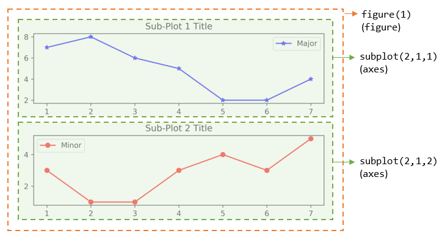
You can also retrieve the handles (references) to the figure and sub-plots (axes), and use the axes in plotting. For example,
>>> import matplotlib.pyplot as plt # Create a figure and sub-plots of 2 rows by 2 columns. Retrieve the handles of figure and subplot axes >>> fig1, ((ax1, ax2), (ax3, ax4)) = plt.subplots(2, 2) >>> fig1 <Figure size 640x480 with 4 Axes> # Figure object >>> ax1 <matplotlib.axes._subplots.AxesSubplot object at ...> # subplots are AxesSubplot objects # Choose the axes for plotting >>> ax1.plot([1, 2, 3, 4, 5], [1, 3, 2, 7, 5], 'ro-') [<matplotlib.lines.Line2D object at ...>] >>> ax1.set_title('AX1 Title') Text(0.5,1,'AX1 Title') >>> ax2.plot([1, 2, 3, 4, 5], [8, 5, 2, 3, 3], 'gx-') [<matplotlib.lines.Line2D object at ...>] >>> ax2.set_title('AX2 Title') Text(0.5,1,'AX2 Title') >>> ax3.plot([1, 2, 3, 4, 5], [1, 2, 3, 4, 5], 'bo-') [<matplotlib.lines.Line2D object at ...>] >>> ax3.set_title('AX3 Title') Text(0.5,1,'AX3 Title') >>> ax4.plot([1, 2, 3, 4, 5], [5, 4, 3, 2, 1], 'rx-') [<matplotlib.lines.Line2D object at ...>] >>> ax4.set_title('AX4 Title') Text(0.5,1,'AX4 Title') >>> plt.tight_layout() # Prevent subplots overlap >>> plt.show()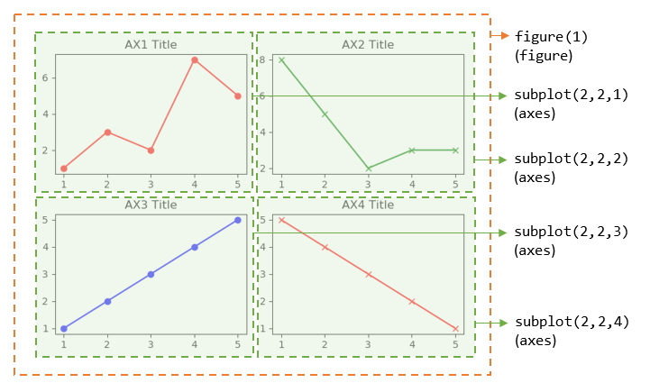
Notes:
- For figure with only one sub-plot (axes), use the following to retrieve the figure and axes handles:
fig1, ax1 = plt.subplots() # default one row and one column - You can also use the following functions to retrieve the handle of the current axes and the current figure:
ax = plt.gca() # Get the current axes handle fig = plt.gcf() # Get the current figure handle
- You can clear the current figure with
plt.clf(), and current axes withplt.cla(). - The
plt.show()function clears the current figure and free the memory.
The plot() Function
The plot() has these signatures:
>>> help(plt.plot) plot([x], y, [fmt], [**kwargs]) # Single line or point plot([x1], y1, [fmt1], [x2], y2, [fmt2], ..., [**kwargs]) # Multiple lines or points # x's and y's can be an array-like structure such as list (line-plot) or a scaler (point-plot) # fmt is a format string
For examples,
plot(y): plotywithx=range(len(y))=[0, 1, 2, ..., len-1], whereycan be an array (line-plot) or a scalar (point-plot).plot(x, y): plotyagainstx, wherexandycan be an array (line-plot) or a scalar (point-plot)plot(x, y, fmt): plotyagainstxusing the format string, e.g.,'bo-'for blue circle solid-line,'r+'for red pluses.plot(x1, y1, fmt1, x2, y2, fmt2, ...): plotynvs.xnusing the respective format strings (multiple lines or multiple points).
Line's Properties: Color, Marker and Line Style
LInes are represented in Line2D objects. You can use format string to specify the color, marker and line style.
The color abbreviations are:
'r'(red),'g'(green),'b'(blue)'c'(cyan),'m'(magenta),'y'(yellow)'k'(black) and'w'(white)
The markers are:
'.'(point marker),','(pixel marker),'*'(star marker),'+'(plus marker),'x'(cross marker)'o'(circle marker),'s'(square marker),'h'(hexagon1 marker),'H'(hexagon2 marker),'d'(thin-diamond marker),'D'(diamond marker)'v'(triangle-down marker),'^'(triangle-up marker),'<'(triangle-left marker),'>'(triangle-right marker)'1'(triangle-down marker),'2'(triangle-up marker),'3'(triangle-left marker),'4'(triangle-right marker)'|'(vline marker),'_'(hline marker)
The line styles are:
'-'or 'solid''--'or 'dashed''-.'or 'dashdot'':'or 'dotted'
Setting Line's Properties
The function plot() returns a list of Line2D objects (see above examples), which has these attributes:
color(orc)marker,markersize(orms),markerfacecolor(ormfc),markeredgecolor(ormec),markeredgewidth(ormew)linestyle(orls),linewidth(orlw)- others
You can set the line's properties:
- Using keyword arguments of
plot(), e.g.,>>> plt.plot([1, 2, 3, 4, 5], [5, 1, 2, 4, 3], color='green', marker='o', markerfacecolor='blue', markersize=12, linestyle='dashed') >>> plt.show() - Using
Line2D's Settersset_xxx()for each property, e.g.,>>> line, = plt.plot([1, 2, 3, 4, 5], [5, 1, 2, 4, 3]) # plot() returns a list of Line2D objects - an one-item list in this plot # Retrieve a reference to the Line2D by unpack an one-item list >>> line.set_color('y') # same as line.set_color('yellow') >>> line.set_linestyle('-.') # same as line.set_linestyle('dashdot') >>> line.set_marker('*') # star marker >>> plt.show() - Using
setp()(set property) function, e.g.,>>> lines = plt.plot([1, 2, 3, 4, 5], [5, 1, 2, 4, 3], [1, 2, 3, 4, 5], [2, 4, 6, 3, 4]) # 2-item list >>> lines [<matplotlib.lines.Line2D object at ...>, <matplotlib.lines.Line2D object at ...>] >>> plt.setp(lines, color='r', marker='+') # Applicable to single line or list of lines [None, None, None, None] >>> plt.show()
Working with Texts
The following functions returns a Text object:
title(str): Set titlexlabel(str),ylabel(str): Setx-axis andy-axis labelstext(xPos, yPos, str): Drawsstrat(xPos, yPos).annotate(str, xy=(x, y), xytext=(x, y)): Annotate for the point atxy, withstrplaced atxytext, with an optional arrow.
You can include optional keyword arguments in the above functions, such as fontsize, color, etc.
Example: text() and annotate()
>>> x = range(1, 6) # [1, 2, 3, 4, 5] >>> y = [5, 2, 4, 1, 6] >>> ytexts = ['First', 'Second', 'Third', 'Fourth', 'Fifth'] >>> plt.plot(x, y, 'ro-') [<matplotlib.lines.Line2D object at ...>] # Put up text via text() on top of each of the data point >>> for i in range(len(x)): plt.text(x[i], y[i]+0.1, ytexts[i], horizontalalignment='center', verticalalignment='bottom') Text(1,5,'First') Text(2,2,'Second') ...... # Annotate third point, draw an arrow from xy to xytext >>> plt.annotate('Annotate Third', xy=(x[2], y[2]), xytext=(x[2]+0.5, y[2]+1), arrowprops={'facecolor':'black', 'shrink':0.05, 'width':1}) Text(3.5,5,'Annotate Third') >>> plt.show()
Logarithmic and Non-Linear Axis
xscale(scale),yscale(scale): the availablescales are'linear','log','symlog'(symmetric log).
[TODO] Examples
Saving the Figures: savefig()
>>> help(plt.savefig)
savefig(fname, dpi=None, facecolor='w', edgecolor='w', orientation='portrait',
papertype=None, format=None, transparent=False, bbox_inches=None,
pad_inches=0.1, frameon=None)
The output file formats including PNG, PDF, SVG, EPS, set via keyword format=xxx.
For example,
>>> plt.plot([1, 2, 3, 4, 5], [5, 2, 4, 3, 2], 'ro-')
[<matplotlib.lines.Line2D object at ...>]
>>> plt.savefig('test.pdf', dpi=600, format='pdf')
>>> plt.savefig('test.png', dpi=600, format='png')
>>> plt.show() # You cannot issue show() before savefig(),
# as show() clears the figure and free the memory
Configuration File "matplotlibrc"
You can configure Matplotlib via configuration file "matplotlibrc".
You can check the location of "matplotlibrc" via:
>>> import matplotlib >>> matplotlib.matplotlib_fname() ......
[TODO]
NumPy
References:
- NumPy mother site @ http://www.numpy.org/.
- NumPy User Guide @ http://docs.scipy.org/doc/numpy-dev/user/
NumPy (which stands for Numerical Python @ http://www.numpy.org/) is the foundation library for scientific computing in
Python. It provides data structures and high-performance functions that the standard Python
does not provide. NumPy defines a data structure called ndarray which is an N-dimensional array to support matrix operations, basic linear algebra, basic statistical operations, Fourier transform, random number capabilities and much more. NumPy uses pre-compiled numerical routines (most of them implemented in C code) for high-performance operations. It also supports vector (or parallel) computations.
The numpy Package
NumPy is distributed in Python package numpy. You need to import the package:
>>> import numpy as np
The numpy.ndarray Class
At the core of NumPy is a class called ndarray for modeling homogeneous n-dimensional arrays and matrices. Unlike Python's normal array list, but like C/C++/Java's array:
ndarrayhas a fixed size at creation.ndarraycontains elements of the same data type.
The ndarray has these attributes:
- ndarray.dtype: data type of the elements. Recall that
ndarraycontains elements of the same type (unlike Python's arraylist). You can use the Python built-in types such asint,float,bool,strandcomplex; or the NumPy's types, such asint8,int16,int32,int64,uint8,uint16,uint32,uint64,float32,float64,complex64,complex128, with the specified bit-size. - ndarray.shape: a tuple of n positive integers
(d0, d1, ..., dn-1)that specifies the size for each dimension. E.g., for a 2D matrix withnrows andmcolumns,shapeis a tuple(n, m).
In Numpy, dimensions are called axes. (NumPy dimension is different from the Mathematical dimension!) The number of axes is rank. The length ofaxis-0isd0, the length ofaxis-1isd1, and so on. - ndarray.ndim: rank (number of axes, length of
shape). NumPy's rank is different from Linear Algebra's rank (number of independent vectors)! - ndarray.size: total number of elements, same as the product of
shape. - ndarray.itemsize: size in bytes of each element (all elements have the same type).
- ndarray.data: the buffer containing the actual elements.
Creating an ndarray and Checking its Attributes
There are a few ways to create a NumPy's ndarray.
Creating an Array 1: numpy.array(lst, [dtype=None]) -> ndarray
You can use the NumPy's function array() to create and initialize an ndarray object from a Python's list/tuple. You can use the optional keyword argument dtype to specify the data type instead of taking the default data type.
For examples,
>>> import numpy as np >>> help(np.array) ...... # Create an 1D int ndarray and check its properties >>> m1 = np.array([11, 22, 33]) >>> m1 array([11, 22, 33]) # ndarray is printed with prefix array() >>> type(m1) <class 'numpy.ndarray'> >>> m1.shape # dimension (3,) # shape is a tuple of dimensions >>> m1.dtype # data type dtype('int32') >>> m1.itemsize 4 # 4 bytes (32 bits) for int32 >>> m1.ndim # rank (number of axes) 1 >>> m1.size # total number of elements 3 >>> m1.data <memory at ...> # Create an 1D float ndarray >>> m2 = np.array([1.1, 2.2, 3]) >>> m2 array([1.1, 2.2, 3. ]) >>> m2.dtype dtype('float64') # default floats are float64 # Create an 1D complex ndarray with keyword dtype >>> m3 = np.array([1, 2.2, 3], dtype=complex) >>> m3 array([ 1.0+0.j, 2.2+0.j, 3.0+0.j]) >>> m3.dtype dtype('complex128') # Create an 1D string ndarray >>> m4 = np.array(['a', 'bb', 'ccc']) >>> m4 array(['a', 'bb', 'ccc'], dtype='<U3') # little-endian Unicode 3-character string >>> m4.dtype dtype('<U3') >>> m5 = np.array((11, 22, 33)) # Can also use a tuple >>> m5 array([11, 22, 33]) # Create a 2D ndarray with a list of lists >>> m6 = np.array([[11, 22, 33], [44, 55, 66]]) >>> m6 array([[11, 22, 33], [44, 55, 66]]) >>> m6.shape # dimensions (2, 3) # rows, columns >>> m6.ndim # number of dimensions, or rank, or number of axes 2 # Can also use a list of mixture of tuples and lists >>> m7 = np.array([(1, 2), [3, 4], (5, 6)], dtype=float) >>> m7 array([[1., 2.], [3., 4.], [5., 6.]]) >>> m7.dtype dtype('float64') >>> m7.shape (3, 2) >>> m7.ndim 2 # rank (2 axes)
NumPy's Data Types
NumPy supports Python's built-in data types (such as int, float, bool, complex, and str). It also introduces its own scalar data types:
- Signed Integers:
int8,int16,int32,int64,int_(default integer type, same as C'slong, normally eitherint64orint32),intc(same as C'sint), intp (integers used for indexing, same as C'sssize_t, normally eitherint32orint64) - Unsigned Integers:
uint8,uint16,unit32,uint64 - Floating-point numbers:
float16,float32,float64,float_(default, same asfloat64) - Boolean:
bool_(TrueorFalse) - Complex numbers:
complex64,complex128,complex_(default, same ascomplex128) - Strings:
str,unicode,unicode_
Creating an Array 2:
numpy.ones(shape) -> ndarray: Return a new array of the given shape, filled with 1.
numpy.zeros(shape) -> ndarray: Return a new array of the given shape, filled with 0.
numpy.empty(shape) -> ndarray: Return a new array of the given shape, uninitialized.
numpy.full(shape, fill_value) -> ndarray: Return a new array of the given shape, filled with fill_value.
numpy.diag(lstDiag) -> ndarray: Return a new array with the given diagonal elements.
numpy.ones_like(a) -> ndarray: Return a new array of the same shape and type as a, filled with 1.
numpy.zeros_like(a) -> ndarray: Return a new array of the same shape and type as a, filled with 0.
numpy.empty_like(a) -> ndarray: Return a new array of the same shape and type as a, uninitialized.
numpy.full_like(a, fill_value) -> ndarray: Return a new array of the same shape and type as a, filled with fill_value.
The function ones() and zeros() create an array full of ones and zeros respectively. The empty() creates a new array of given shape and type, without initializing entries. The default type is float64, unless overridden with keyword dtype. For example,
>>> import numpy as np >>> help(np.ones) >>> m1 = np.ones((3, 5)) # takes a shape tuple in row-major order >>> m1 array([[ 1., 1., 1., 1., 1.], [ 1., 1., 1., 1., 1.], [ 1., 1., 1., 1., 1.]]) >>> m1.dtype dtype('float64') >>> help(np.zeros) >>> m2 = np.zeros((2, 3, 4), dtype=np.int32) # 3D array >>> m2 array([[[0, 0, 0, 0], [0, 0, 0, 0], [0, 0, 0, 0]], [[0, 0, 0, 0], [0, 0, 0, 0], [0, 0, 0, 0]]]) >>> m2.dtype dtype('int32') >>> help(np.full) >>> m3 = np.full((2, 5), 99) >>> m3 array([[99, 99, 99, 99, 99], [99, 99, 99, 99, 99]]) >>> help(np.empty) >>> m4 = np.empty((2, 3, 2, 2)) # A 4D array >>> m4 array([[[[4.65302447e-312, 0.00000000e+000], # Contents not initialized [0.00000000e+000, 1.53527001e-311]], [[0.00000000e+000, 1.00000000e+000], [0.00000000e+000, 0.00000000e+000]], [[1.00000000e+000, 0.00000000e+000], [0.00000000e+000, 0.00000000e+000]]], [[[0.00000000e+000, 1.00000000e+000], [1.01007000e-311, 0.00000000e+000]], [[2.49009086e-321, 4.94065646e-324], [0.00000000e+000, 1.53526866e-311]], [[1.53526866e-311, 0.00000000e+000], [0.00000000e+000, 0.00000000e+000]]]]) >>> m4.dtype dtype('float64') >>> help(np.diag) >>> m5 = np.diag([11, 22, 33]) # Create a diagonal 2D array >>> m5 array([[11, 0, 0], [ 0, 22, 0], [ 0, 0, 33]]) >>> help(np.zeros_like) >>> m6 = np.zeros_like(m5) # Same shape and type >>> m6 array([[0, 0, 0], [0, 0, 0], [0, 0, 0]]) >>> m6.dtype dtype('int32')
Creating an Array 3:
numpy.arange([start=0], stop, [step=1]) -> ndarray_1D
numpy.linspace(start, stop, num) -> ndarray_1D
ndarray.reshape(newShape)
NumPy provides a function numpy.arange(start, stop, step) to create a 1D ndarray in the range of [start, stop), analogous to Python's range(start, stop, step) built-in function. Unlike range() which accepts only int, you can use float for start, stop and step in arange(). For examples,
# Using arange() to create a 1D ndarray >>> help(np.arange) >>> m1 = np.arange(1, 11) # start included, stop excluded >>> m1 array([ 1, 2, 3, 4, 5, 6, 7, 8, 9, 10]) >>> m1.dtype dtype('int32') >>> m2 = np.arange(5) # default start is 0, step is 1 >>> m2 array([0, 1, 2, 3, 4]) # Use float for start, stop, step >>> m3 = np.arange(1.5, 8.5) >>> m3 array([1.5, 2.5, 3.5, 4.5, 5.5, 6.5, 7.5]) >>> m4 = np.arange(1, 10, 0.8) >>> m4 array([1. , 1.8, 2.6, 3.4, 4.2, 5. , 5.8, 6.6, 7.4, 8.2, 9. , 9.8]) # But Python's range() only takes int >>> a1 = range(1.5, 8.5) TypeError: 'float' object cannot be interpreted as an integer
You can then use ndarray.reshape(newShape) to reshape the 1D to N-D ndarray. For examples,
>>> help(np.reshape) # Reshape the 1D ndarray into 2D >>> m5 = np.arange(10).reshape(2, 5) >>> m5 array([[0, 1, 2, 3, 4], [5, 6, 7, 8, 9]]) # One newShape dimension can be -1. In this case, the value is # inferred from the length of the array and remaining dimensions. >>> m6 = m5.reshape(1, -1) >>> m6 array([[0, 1, 2, 3, 4, 5, 6, 7, 8, 9]])
NumPy also provides a similar function called numpy.linspace(start, stop, num) to create a evenly-spaced (linearly-spaced) 1D float ndarray in the interval [start, stop]. By default, stop is included. But you can exclude it via keyword endpoint=False. The linspace() takes the number of points, instead of step size for arange().
For example,
>>> help(np.linspace)
>>> m1 = np.linspace(1, 2, 10)
>>> m1
array([ 1. , 1.11111111, 1.22222222, 1.33333333, 1.44444444,
1.55555556, 1.66666667, 1.77777778, 1.88888889, 2. ])
>>> m1.dtype
dtype('float64')
>>> m2 = np.linspace(1, 2, 10, endpoint=False) # Exclude end-point
>>> m2
array([1. , 1.1, 1.2, 1.3, 1.4, 1.5, 1.6, 1.7, 1.8, 1.9])
>>> m3 = np.linspace(1, 10, 10, dtype=int) # Set data type
>>> m3
array([ 1, 2, 3, 4, 5, 6, 7, 8, 9, 10])
>>> m4 = np.linspace(1, 10, 10).reshape(2, 5)
>>> m4
array([[ 1., 2., 3., 4., 5.],
[ 6., 7., 8., 9., 10.]])
# From -pi to pi (both included) in degree resolution
# linspace() could be more convenience than arange()
>>> m5 = np.linspace(-np.pi, np.pi, 361)
>>> m5
array([-3.14159265, .... 3.14159265])
Creating an Array 4: Creating Random Array via the numpy.random.xxx() -> ndarray
The numpy.random module supports random number generation. You can draw samples from commonly-used distributions like Uniform, Normal (Gaussian), Binomial and Poisson.
- Uniformly Distributed:
numpy.random.rand(d0, d1, ..., dn-1) -> ndarray: Uniformly distributed floats in[0.0, 1.0), providing the dimensions.
numpy.random.random(size=None) -> ndarray: Uniformly distributed floats in[0.0, 1.0), providing thesizein scalar orshapein tuple.
numpy.random.random_sample(size=None) -> ndarray: same as above.
numpy.random.uniform(low=0.0, high=1.0, size=None) -> ndarray: Uniformly distributed floats in[low, high).
numpy.random.randint(low, high=None, size=None) -> ndarray: Uniformly distributed integers between[low, high)>>> help(np.random.rand) >>> m1 = np.random.rand(2, 3) # Specify the dimensions >>> m1 array([[0.57877041, 0.93898599, 0.15998744], [0.5195182 , 0.79441764, 0.47046495]]) >>> m1.dtype dtype('float64') >>> help(np.random.random) >>> m2 = np.random.random() # One sample (default) >>> m2 0.8530312529958475 # Scalar, NOT array >>> m3 = np.random.random(5) # 1D ndarray >>> m3 array([ 0.31007576, 0.21615439, 0.26983623, 0.44427757, 0.35548085]) >>> m4 = np.random.random((2, 4)) # ndarray of given shape >>> m4 array([[ 0.45519034, 0.97199324, 0.49615973, 0.5377464 ], [ 0.1057191 , 0.900195 , 0.7685127 , 0.23238175]]) >>> help(np.random.uniform) >>> m5 = np.random.uniform(5, 10, (2, 4)) # low, high, shape >>> m5 array([[8.39092855, 5.95135548, 7.21166273, 6.46086279], [9.7510942 , 5.99099363, 9.9313887 , 6.75191231]]) >>> help(np.random.randint) >>> m6 = np.random.randint(1, 101, (2, 4)) >>> m6 array([[68, 97, 84, 55], [49, 57, 28, 87]]) >>> m7 = np.random.randint(1, 101, 10) >>> m7 array([37, 34, 57, 60, 26, 34, 46, 73, 59, 96]) >>> m8 = np.random.randint(50, size=(2, 5)) # [0, 50) >>> m8 array([[16, 48, 9, 3, 22], [19, 20, 16, 17, 11]])
- Normal (Gaussian) Distributed:
numpy.random.randn(d0, d1, ..., dn-1) -> ndarray: Standard normal distribution (mean=0, standard deviation=1), providing the dimensions.
numpy.random.normal(loc=0.0, scale=1.0, size=None) -> ndarray: Normal (Gaussian) distribution, with meanlocand standard deviationscale.>>> help(np.random.randn) >>> m1 = np.random.randn(2, 5) >>> m1 array([[-0.36150823, -2.02660018, -0.38235962, 0.64032599, 0.23108273], [-0.31966815, 1.3190811 , 0.49096282, 0.01427582, -1.35702935]]) >>> help(np.random.normal()) >>> m2 = np.random.normal() >>> m2 -0.355415080976361 # Scalar, NOT array >>> m3 = np.random.normal(size=10) >>> m3 array([-0.78298485, 0.53316234, 0.07914094, 0.88850953, 1.05475548, 0.84182328, 0.0081135 , -0.28555631, -0.04288513, -0.36058967]) >>> m4 = np.random.normal(size=(2, 3)) >>> m4 array([[-1.24201626, -0.66748844, 0.3602864 ], [-0.97706347, 1.02509533, 0.08946322]]) >>> m5 = np.random.normal(50, 15, 10) >>> m5 array([ 49.57202009, 57.63097904, 51.33961472, 22.0570641 , 65.46613523, 35.14129408, 61.97144885, 56.32118504, 75.82942142, 40.70516785]) >>> m6 = np.random.normal(5, 2, (2, 4)) >>> m6 array([[5.09802446, 1.74155424, 3.87027413, 3.87650247], [5.50037146, 6.61549043, 6.9740259 , 5.04622304]]) - Binomial Distributed:
numpy.random.binomial(n, p, size=None) -> ndarray: Binomial distribution forntrials withpprobability of success.>>> help(np.random.binomial) >>> m1 = np.random.binomial(1, 0.5, 10) # 5 trials, probability of success is 0.5 >>> m1 array([1, 1, 1, 1, 0, 1, 0, 1, 1, 1]) >>> m2 = np.random.binomial(5, 0.2, (2, 4)) >>> m2 array([[2, 0, 0, 0], [1, 1, 1, 2]]) - Poisson Distributed:
numpy.random.poisson(lam=1.0, size=None) -> ndarray: Poisson distribution with parameterlambda.>>> help(np.random.poisson) >>> m1 = np.random.poisson(1, 15) >>> m1 array([2, 2, 2, 2, 0, 1, 2, 1, 0, 1, 0, 0, 3, 0, 0]) >>> m2 = np.random.poisson(5, (2, 5)) >>> m2 array([[ 4, 6, 5, 11, 5], [ 7, 4, 3, 7, 7]]) - Permutation: numpy.random.permutation(x) -> ndarray
# If x is an integer, randomly permutate np.arange(x) >>> np.random.permutation(10) array([0, 8, 2, 5, 3, 6, 7, 9, 1, 4]) # If x is a 1D array, randomly permutate the array >>> np.random.permutation([1, 3, 8, 11, 15]) array([ 8, 3, 11, 15, 1]) # If x is a multi-dimensional array, randomly permutate along the first axis >>> m1 = np.arange(12).reshape(3, 4) >>> m1 array([[ 0, 1, 2, 3], [ 4, 5, 6, 7], [ 8, 9, 10, 11]]) >>> np.random.permutation(m1) # Return a new array array([[ 8, 9, 10, 11], [ 4, 5, 6, 7], [ 0, 1, 2, 3]])
Accessing the ndarray
Accessing the ndarray 1: Multi-Dimensional Indexing [i, j, ...] and Slicing [m1:n1:step1, m2:n2:step2, ...]
You can apply indexing and slicing to NumPy's ndarray, similar to Python's array list, but extended to multi-dimensional.
>>> m1 = np.arange(1, 13).reshape(3, 4) # 2D >>> m1 array([[ 1, 2, 3, 4], [ 5, 6, 7, 8], [ 9, 10, 11, 12]]) >>> m1.shape (3, 4) # 2D Indexing a specific element >>> m1[0, 2] 3 >>> m1[0, -1] # Can use negative index starting from the end 4 # 2D Slicing >>> m1[0] # Same as m1[0, :] or m1[0, 0:m1.shape[1]] # Missing trailing index same as : (all elements) array([1, 2, 3, 4]) >>> m1[0, :] # Same as above array([1, 2, 3, 4]) >>> m1[:, 0] # Same as m1[0:m1.shape[0], 0]
array([1, 5, 9]) # Column becomes row >>> m1[-1] # Can use negative index, same as m1[-1, :] array([ 9, 10, 11, 12]) >>> m1[:, -1] array([ 4, 8, 12]) >>> m1[0, 1:] array([2, 3, 4]) >>> m1[0:2, 1:3] array([[2, 3], [6, 7]]) >>> m1[0:2, 0:3:2] array([[1, 3], [5, 7]]) >>> m1[::2, ::2] # Alternate rows and columns array([[ 1, 3], [ 9, 11]]) # You can use negative step size to reverse the slice (similar to Python's array list) >>> m1[::-1] array([[ 9, 10, 11, 12], [ 5, 6, 7, 8], [ 1, 2, 3, 4]]) >>> m1[::-1, ::-1] array([[12, 11, 10, 9], [ 8, 7, 6, 5], [ 4, 3, 2, 1]]) >>> m1[::-2, ::-2] array([[12, 10], [ 4, 2]]) # Python's multi-dimensional list is a list of lists, not truly multi-dimensional # whereas NumPy's ndarray is a true multi-dimensional array with multiple axes. >>> lst = [[1, 2, 3, 4], [5, 6, 7, 8], [9, 10, 11, 12]] # A list of lists >>> lst[0] [1, 2, 3, 4] # Element is a list >>> lst[0, 0] # not truly 2D TypeError: list indices must be integers or slices, not tuple >>> lst[0][0] 1 >>> lst[::2] [[1, 2, 3, 4], [9, 10, 11, 12]] >>> lst[::2][::2] [[1, 2, 3, 4]]
Accessing the ndarray 2: Indexing with list
You can provide a list in indexing (this is not supported in Python's array list). For examples,
>>> m1 = np.arange(12).reshape(3, 4)
>>> m1
array([[ 0, 1, 2, 3],
[ 4, 5, 6, 7],
[ 8, 9, 10, 11]])
>>> m1[:, [1, 3]] # Select a list of columns
array([[ 1, 3],
[ 5, 7],
[ 9, 11]])
>>> m1[[0, 1], :] # Select a list of rows
array([[0, 1, 2, 3],
[4, 5, 6, 7]])
>>> m1[[2, 0], :] # Select a list of rows and re-arrange
array([[ 8, 9, 10, 11],
[ 0, 1, 2, 3]])
# Select a list of elements
>>> m1[[0, 1], [1, 3]] # Elements [0, 1] and [1, 3]
array([1, 7])
>>> m1[[0, 1, 2], [1, 3, 1]] # Elements [0, 1], [1, 3] and [2, 1]
array([1, 7, 9])
>>> m1[[0, 1], [1, 3, 1]]
IndexError: shape mismatch: indexing arrays could not be broadcast together with shapes (2,) (3,)
Accessing the ndarray 3: Filtering (Selection) via a boolean list/ndarray
You can filter a NumPy's ndarray with a boolean list or ndarray. This is not supported in Python's list.
>>> m1 = np.arange(12).reshape(3, 4)
>>> m1
array([[ 0, 1, 2, 3],
[ 4, 5, 6, 7],
[ 8, 9, 10, 11]])
# Filtering rows
>>> m1[[True, False, False]] # Filtering rows according to bool value (axis-0)
array([[0, 1, 2, 3]])
>>> m1[[True, False, True]]
array([[ 0, 1, 2, 3],
[ 8, 9, 10, 11]])
# Filtering columns
>>> m1[:, [True, False, True, False]] # Filtering columns (axis-1)
array([[ 0, 2],
[ 4, 6],
[ 8, 10]])
# Filter elements
>>> filter = np.array([[True, False, True, False], [True, False, True, False], [True, False, True, False]])
>>> filter
array([[ True, False, True, False],
[ True, False, True, False],
[ True, False, True, False]])
>>> m1[filter]
array([ 0, 2, 4, 6, 8, 10]) # 1D result
>>> m1 > 6
array([[False, False, False, False],
[False, False, True, True],
[ True, True, True, True]]) # result is an ndarray
>>> m1[m1 > 6] # filtering with a boolean ndarray
array([ 7, 8, 9, 10, 11])
The ndarray's Operators
The Overloaded Element-wise Assignment Operator (=) for Multi-dimensional Indexing and Slicing
The ndarray's assignment operator (=) is overloaded to support element-wise assignment for indexing and slicing. This is not supported in Python's list.
>>> m1 = np.arange(1, 10).reshape((3, 3)) # 2D >>> m1 array([[1, 2, 3], [4, 5, 6], [7, 8, 9]]) # Assignment via 2D indexing a specific element >>> m1[0, 0] = 99 >>> m1 array([[99, 2, 3], [ 4, 5, 6], [ 7, 8, 9]]) # Element-wise Assignment via 2D slicing >>> m1[::2, ::2] = 0 # Alternate rows and columns >>> m1 array([[0, 2, 0], [4, 5, 6], [0, 8, 0]]) >>> m1[[True, False, False]] = 88 # Slicing via bool list on axis-0 >>> m1 array([[88, 88, 88], [ 4, 5, 6], [ 0, 8, 0]]) >>> m1 = 0 # But this re-assigns the variable to new value >>> m1 0 # Python's built-in list does not support element-wise assignment for slicing >>> lst = [1, 2, 3, 4, 5, 6, 7, 8, 9] >>> lst[0] = 99 # Supports indexing with assignment >>> lst [99, 2, 3, 4, 5, 6, 7, 8, 9] >>> lst[0:2] = 0 # No element-wise slicing assignment TypeError: can only assign an iterable >>> lst[0:2] = [0, 0] # Support slicing assignment with list >>> lst [0, 0, 3, 4, 5, 6, 7, 8, 9] >>> lst[0:2] = [0] >>> lst [0, 3, 4, 5, 6, 7, 8, 9] >>> lst = 0 >>> lst 0 # But this re-assigns the variable to scalar 0
The Overloaded Element-wise Arithmetic Operators (+, -, *, /, //, %, **) and Compound Arithmetic Assignment Operators (+=, -=, *=, /=, //=, %=, **=)
The arithmetic operators such as '+', '-', '*', '/', '//', '%' and '**' are overloaded to apply element-wise. The compound assignment operators, such as '+=' and '-=', are also supported. This is not supported in Python's array list.
For examples,
>>> m1 = np.array([[1, 2, 3], [4, 5, 6]])
>>> m1
array([[1, 2, 3],
[4, 5, 6]])
>>> m2 = np.array([[11, 12, 13], [14, 15, 16]])
>>> m2
array([[11, 12, 13],
[14, 15, 16]])
# ndarray ⊕ ndarray (element-wise)
>>> m1 + m2
array([[12, 14, 16],
[18, 20, 22]])
>>> m1 - m2
array([[-10, -10, -10],
[-10, -10, -10]])
>>> m1 * m2 # element-wise multiplication (not matrix multiplication)
array([[11, 24, 39],
[56, 75, 96]])
>>> m2 / m1 # float divide
array([[ 11. , 6. , 4.33333333],
[ 3.5 , 3. , 2.66666667]])
>>> m2 // m1 # floor integer divide
array([[11, 6, 4],
[ 3, 3, 2]], dtype=int32)
>>> m2 % m1 # modulus (remainder)
array([[0, 0, 1],
[2, 0, 4]], dtype=int32)
>>> m2 ** m1 # exponential (power)
array([[ 11, 144, 2197],
[ 38416, 759375, 16777216]], dtype=int32)
# You can also use NumPy's module-level functions instead of the operators:
>>> np.add(m1, m2)
array([[12, 14, 16],
[18, 20, 22]])
>>> np.subtract(m1, m2)
array([[-10, -10, -10],
[-10, -10, -10]])
>>> np.multiply(m1, m2)
array([[11, 24, 39],
[56, 75, 96]])
>>> np.divide(m2, m1)
array([[11. , 6. , 4.33333333],
[ 3.5 , 3. , 2.66666667]])
>>> np.floor_divide(m2, m1)
array([[11, 6, 4],
[ 3, 3, 2]], dtype=int32)
>>> np.mod(m2, m1)
array([[0, 0, 1],
[2, 0, 4]], dtype=int32)
>>> np.power(m2, m1)
array([[ 11, 144, 2197],
[ 38416, 759375, 16777216]], dtype=int32)
# ndarray ⊕ scalar (element-wise)
>>> m1 + 80
array([[81, 82, 83],
[84, 85, 86]])
# Compound Arithmetic Assignment Operators (element-wise)
>>> m1 += m2
>>> m1
array([[12, 14, 16],
[18, 20, 22]])
# Increment/Decrement (element-wise)
>>> m3 = np.array([[1, 2, 3], [4, 5, 6]])
>>> m3
array([[1, 2, 3],
[4, 5, 6]])
>>> m3 += 1 # Python does not support ++, use m3 += 1, or m3 = m3 + 1
>>> m3
array([[2, 3, 4],
[5, 6, 7]])
>>> m3 -= 1
>>> m3
array([[1, 2, 3],
[4, 5, 6]])
# Python's list does not support element-wise arithmetic operations
>>> lst1 = [1, 2, 3]
>>> lst2 = [4, 5, 6]
>>> lst1 + lst2
[1, 2, 3, 4, 5, 6] # Concatenation, NOT element-wise addition
>>> lst1 * lst2
TypeError: can't multiply sequence by non-int of type 'list'
The Overloaded Element-wise Comparison Operators (==, !=, <, >, <=, >=)
You can also apply comparison operators, such as ==, !=, <, <=, >, >=, element-wise. This is not supported in Python's list.
For example,
>>> m1 = np.array([[1, 222, 13], [44, 5, 66]])
>>> m2 = np.array([[11, 12, 13], [14, 15, 16]])
>>> m1 < m2
array([[ True, False, False],
[False, True, False]])
>>> m1 == m2
array([[False, False, True],
[False, False, False]])
# With Scalar
>>> m1 == 44
array([[False, False, False],
[ True, False, False]])
# Select individual elements based on a boolean ndarray
>>> m1[m1 < m2]
array([1, 5])
numpy.any(a, axis=None), ndarray.any(axis=None): Test if ANY element along a given axis evaluates to True.
numpy.all(a, axis=None), ndarray.all(axis=None): Test if ALL elements along a given axis evaluates to True.
>>> m1 = np.arange(10).reshape(2, 5)
>>> m1
array([[0, 1, 2, 3, 4],
[5, 6, 7, 8, 9]])
>>> m1 > 3 # element-wise comparison
array([[False, False, False, False, True],
[ True, True, True, True, True]])
>>> (m1 > 3).any() # or
True
>>> (m1 > 3).all() # and
False
>>> np.any([-1, 0, 5]) # 0 evaluates to False
True
>>> np.all([-1, 0, 5])
False
>>> np.all([[True, False, True], [True, True, False]], axis=0)
array([ True, False, False]) # Column-wise
Axes, Dimensions and Rank
Numpy has its own meaning for axes, dimension and rank, which is different from Mathematics and Linear Algebra.
A 2D array has 2 axes: axis-0 pointing horizontally across the columns, and axis-1 pointing vertically across the rows. Operation applied on axis-0 operates column-wise, while operation applied on axis-1 operates rows-wise. Rank (or number of dimension, or ndim) is defined as the number of axes.
For examples,
>>> import numpy as np
>>> m1 = np.arange(1, 16).reshape(3, 5)
>>> m1
array([[ 1, 2, 3, 4, 5],
[ 6, 7, 8, 9, 10],
[11, 12, 13, 14, 15]])
>>> m1.shape
(3, 5) # 3 rows, 5 columns, 2-D
>>> m1.ndim
2 # rank or number of axes
>>> m1.sum(axis=0) # Sum over axis-0 (column-wise operation)
array([18, 21, 24, 27, 30])
>>> m1.sum(axis=1) # Sum over axis-1 (row-wise operation)
array([15, 40, 65])
The ndarray's Functions
Multiplication: numpy.dot(a, b)
The numpy.dot() performs different operations depending on the dimension of the array. It is NOT always the dot product or matrix multiplication.
>>> v1 = np.array([1, 2, 3])
>>> v2 = np.array([4, 5, 6])
>>> m1 = np.arange(1, 10).reshape(3, 3)
>>> m1
array([[1, 2, 3],
[4, 5, 6],
[7, 8, 9]])
>>> m2 = np.arange(9, 0, -1).reshape(3, 3)
>>> m2
array([[9, 8, 7],
[6, 5, 4],
[3, 2, 1]])
>>> help(np.dot)
# If both a and b are 1D array, compute the "inner product"
>>> np.dot(v1, v2)
32
# If both a and b are 2D arrays, compute the "matrix multiplication".
# But numpy.matmul(a, b), or a @ b is preferred.
>>> np.dot(m1, m2)
array([[ 30, 24, 18],
[ 84, 69, 54],
[138, 114, 90]])
>>> np.matmul(m1, m2) # matrix multiplication
array([[ 30, 24, 18],
[ 84, 69, 54],
[138, 114, 90]])
>>> m1 @ m2
array([[ 30, 24, 18],
[ 84, 69, 54],
[138, 114, 90]])
# If either a or b is 0-D (scalar), it is equivalent to element-wise multiplication.
# But numpy.multiply(a, b), or a * b is preferred.
>>> np.dot(2, m1)
array([[ 2, 4, 6],
[ 8, 10, 12],
[14, 16, 18]])
>>> 2 * m1
array([[ 2, 4, 6],
[ 8, 10, 12],
[14, 16, 18]])
>>> np.multiply(m1, 2)
array([[ 2, 4, 6],
[ 8, 10, 12],
[14, 16, 18]])
# If a is an N-D array and b is a 1-D array, it is a sum product over
# the last axis of a and b
>>> np.dot(m1, v1)
array([14, 32, 50])
# Sum product over each row of m1 and v1
# m1 has two axes, axis-0 pointing horizontally across the columns
# and axis-1 pointing vertically across the rows.
# Operation on axis-1 is row-wise
# If a is an N-D array and b is an M-D array (where M>=2), it is a
# sum product over the last axis of a and the second-to-last axis of b
>>> np.dot(v1, m1)
array([30, 36, 42])
# Second-to-last axis of b (m1) is axis-0, pointing horizontally across the column
# Operation over axis-0 is column-wise
Universal Functions (ufunc) and Aggregate Functions
A Universal Functions (ufunc) operates on each element of the array and return a new array of the same size. For examples, numpy.sin(ndarray), numpy.sqrt(ndarray).
An aggregate function operates on an array and returns a single result. For examples, numpy.sum(ndarray), numpy.min(ndarray), numpy.mean(ndarray). In NumPy, you could choose to operate on the entire array, or a particular axis with the keyword argument axis=n.
NumPy's Aggregate Statistical Functions
sum(),mean(),std(),min(),max()cumsum()(cumulative sum)- More
You can invoke these functions via either numpy's module-level functions or ndarray's member methods. For example, you can invoke the sum() function via ndarray.sum() or numpy.sum(ndarray). Furthermore, many of the aggregate functions can be applied to the entire array or a particular axis with the keyword argument axis=n.
For examples,
>>> m1 = np.array([[11, 22, 33], [44, 55, 66]])
>>> m1
array([[11, 22, 33],
[44, 55, 66]])
>>> m1.sum()
231
>>> np.sum(m1) # Same as above
231
>>> m1.min()
11
>>> np.max(m1)
66
# You can operate over a specific axis
>>> m1.sum(axis = 0) # sum column-wise
array([55, 77, 99])
>>> np.sum(m1, axis = 0) # Same as above
array([55, 77, 99])
>>> m1.sum(axis = 1) # sum row-wise
array([ 66, 165])
>>> m1.cumsum(axis = 0) # cumulative sum column-wise
array([[11, 22, 33],
[55, 77, 99]])
>>> m1.cumsum(axis = 1) # cumulative row-wise
array([[ 11, 33, 66],
[ 44, 99, 165]])
>>> m1.cumsum() # default, operate on a flatten array
array([ 11, 33, 66, 110, 165, 231], dtype=int32)
>>> m1.ravel() # flatten the array
array([11, 22, 33, 44, 55, 66])
NumPy's Universal Mathematical Functions
NumPy provides mathematical functions, such as:
numpy.sin(ndarray),numpy.cos(ndarray),numpy.tan(ndarray)numpy.exp(ndarray),numpy.sqrt(ndarray)numpy.pi,numpy.e- more
These functions are NumPy's module-level functions. They operate on each element of the array and return an array of the same size.
For examples,
>>> m1 = np.array([[11, 22, 33], [44, 55, 66]])
>>> m1
array([[11, 22, 33],
[44, 55, 66]])
>>> np.sqrt(m1)
array([[ 3.31662479, 4.69041576, 5.74456265],
[ 6.63324958, 7.41619849, 8.1240384 ]])
>>> np.exp(m1)
array([[ 5.98741417e+04, 3.58491285e+09, 2.14643580e+14],
[ 1.28516001e+19, 7.69478527e+23, 4.60718663e+28]])
>>> np.sin(m1)
array([[-0.99999021, -0.00885131, 0.99991186],
[ 0.01770193, -0.99975517, -0.02655115]])
Iterator
>>> m1 = np.array([[11, 22, 33], [44, 55, 66]]) # Iterate through the axis-0 >>> for row in m1: print(row, type(row)) [11 22 33] <class 'numpy.ndarray'> [44 55 66] <class 'numpy.ndarray'> # Iterate through axis-0, then axis-1 >>> for row in m1: for col in row: print(col, end=', ') 11, 22, 33, 44, 55, 66, # Iterate through each element by flattening the array >>> for item in m1.flat: print(item, end=' ') 11 22 33 44 55 66
In general, you shall avoid iterate over the elements, as iteration (sequential) is very much slower than vector (parallel) operations.
numpy.apply_along_axis(func, axis, ndarray)
Apply the given func along the axis for the ndarray. For examples,
>>> m1 = np.array([[1 , 2, 3], [4, 5, 6]]) >>> np.apply_along_axis(np.sum, 0, m1) # axis-0 is column-wise array([5, 7, 9]) # return an ndarray >>> np.apply_along_axis(np.sum, 1, m1) # axis-1 is row-wise array([ 6, 15]) # Check out np.apply_along_axis() >>> np.apply_along_axis(lambda x: print(x, type(x)), 0, m1) [1 4] <class 'numpy.ndarray'> [2 5] <class 'numpy.ndarray'> [3 6] <class 'numpy.ndarray'> array([None, None, None], dtype=object) # Universal >>> np.apply_along_axis(lambda v: v+1, 0, m1) # v and v+1 is ndarray array([[2, 3, 4], [5, 6, 7]]) # Aggregate >>> np.apply_along_axis(lambda v: v.max()-v.min(), 0, m1) # range array([3, 3, 3])
More NumPy's Functions
Shape (Dimension) Manipulation
reshape(): return an array with modified shape.resize(): modifies this array.ravel(): flatten the array.transpose()
You can invoke these functions via NumPy's module-level function or ndarray member functions, e.g., numpy.reshape(ndarray, newShape) or ndarray.reshape(newShape).
>>> m1 = np.array([[11, 22, 33], [44, 55, 66]]) >>> m2 = m1.reshape(3, 2) # Return a new array >>> m2 array([[11, 22], [33, 44], [55, 66]]) >>> m1 array([[11, 22, 33], [44, 55, 66]]) >>> m3 = np.reshape(m1, (3, 2)) # using NumPy's module-level function >>> m3 array([[11, 22], [33, 44], [55, 66]]) >>> m1.resize(3, 2) # Resize this array >>> m1 array([[11, 22], [33, 44], [55, 66]]) >>> m1.shape = (2, 3) # Same as resize() >>> m1 array([[11, 22, 33], [44, 55, 66]]) >>> m1.ravel() # Flatten to 1D array([11, 22, 33, 44, 55, 66]) >>> m1.resize(6) # Same as ravel() >>> m1 array([11, 22, 33, 44, 55, 66]) >>> m1 = np.array([[11, 22, 33], [44, 55, 66]]) >>> m1 array([[11, 22, 33], [44, 55, 66]]) >>> m1 = m1.transpose() # transpose() returns a new array >>> m1 array([[11, 44], [22, 55], [33, 66]])
Stacking Arrays
numpy.vstack(tup): stack 2 or more array vertically.numpy.hstack(tup): stack 2 or more array horizontally.numpy.column_stack(tup): stack columns of 2 or more 1D arraysnumpy.row_stack(tup): stack rows of 2 or more 1D arrays
>>> m1 = np.array([[11, 22, 33], [44, 55, 66]])
>>> m2 = np.arange(6).reshape(2, 3)
>>> m2
array([[0, 1, 2],
[3, 4, 5]])
>>> np.vstack((m1, m2))
array([[11, 22, 33],
[44, 55, 66],
[ 0, 1, 2],
[ 3, 4, 5]])
>>> np.hstack((m1, m2))
array([[11, 22, 33, 0, 1, 2],
[44, 55, 66, 3, 4, 5]])
>>> v1 = np.array([1, 2, 3, 4])
>>> v2 = np.array([11, 12, 13, 14])
>>> v3 = np.array([21, 22, 23, 24])
>>> np.row_stack((v1, v2, v3))
array([[ 1, 2, 3, 4],
[11, 12, 13, 14],
[21, 22, 23, 24]])
>>> np.column_stack((v1, v2, v3))
array([[ 1, 11, 21],
[ 2, 12, 22],
[ 3, 13, 23],
[ 4, 14, 24]])
Splitting an Array
numpy.hsplit(arr, sections): split horizontally into equal partitionsnumpy.vsplit(arr, sections): split vertically into equal partitions.numpy.split(arr, sections, axis=0): split into equal partitions along the axis.numpy.array_split(arr, sections, axis=0):
For examples,
>>> m1 = np.arange(1, 13).reshape(3, 4)
>>> m1
array([[ 1, 2, 3, 4],
[ 5, 6, 7, 8],
[ 9, 10, 11, 12]])
>>> np.hsplit(m1, 2)
[array([[ 1, 2],
[ 5, 6],
[ 9, 10]]),
array([[ 3, 4],
[ 7, 8],
[11, 12]])]
>>> a, b = np.hsplit(m1, 2) # with assignment
>>> a
array([[ 1, 2],
[ 5, 6],
[ 9, 10]])
>>> b
array([[ 3, 4],
[ 7, 8],
[11, 12]])
>>> np.vsplit(m1, 3) # must be equal partitions
[array([[1, 2, 3, 4]]),
array([[5, 6, 7, 8]]),
array([[ 9, 10, 11, 12]])]
Filling an Array with a Scalar: fill()
>>> m1 = np.array([[11, 22, 33], [44, 55, 66]])
>>> m1
array([[11, 22, 33],
[44, 55, 66]])
>>> m1.fill(0)
>>> m1
array([[0, 0, 0],
[0, 0, 0]])
Copying an array: copy()
Assigning one array to another variable via the assignment operator (=) simply assigns the reference, e.g.,
>>> m1 = np.array([[11, 22, 33], [44, 55, 66]])
>>> m2 = m1
>>> m2
array([[11, 22, 33],
[44, 55, 66]])
>>> m2 is m1
True # Same reference (pointing to the same object)
# Modifying m1 affects m2
>>> m1[0, 0] = 99
>>> m2
array([[99, 22, 33],
[44, 55, 66]])
To generate a new copy, use copy() function:
>>> m1 = np.arange(1, 9).reshape(2, 4)
>>> m1
array([[1, 2, 3, 4],
[5, 6, 7, 8]])
>>> m2 = m1.copy()
>>> m1 is m2
False # holding different objects
>>> m1[0, 0] = 99 # modify m1
>>> m2
array([[1, 2, 3, 4], # m2 not affected
[5, 6, 7, 8]])
>>> m3 = np.copy(m1) # using NumPy's module-level function
>>> m3
array([[99, 2, 3, 4],
[ 5, 6, 7, 8]])
>>> m3 is m1
False
view(): creates a new array object that looks at the same data, i.e., shallow copy. A slice of array produces a view.copy(): makes a complete (deep) copy of the array and its data.
Vectorization and Broadcasting
NumPy makes full use of vectorization in its implementation, where you do not need to use an explicit loop to iterate through the elements of an ndarray. For example, you can simply write m1 + m2 to perform element-wise addition, instead of writing an explicit loop.
Broadcasting allows NumPy to carry out some operations between two (or more) array of different shapes, subjected to certain constraints.
In NumPy, two arrays are compatible if the lengths of each dimension (shape) are the same, or one of the lengths is 1. For example, suppose that m1's shape is (3, 4, 1) and m2's shape is (3, 1, 4), m1 and m2 are compatible because d0 has the same length, and one of the lengths on d1 and d2 is 1.
Broadcasting is carried out on NumPy as illustrated in the following example:
>>> m1 = np.arange(1, 13).reshape(3, 4)
>>> m1
array([[ 1, 2, 3, 4],
[ 5, 6, 7, 8],
[ 9, 10, 11, 12]])
>>> m2 = np.array([1, 1, 1, 1])
>>> m1.shape
(3, 4)
>>> m2.shape
(4,)
>>> m1 + m2
array([[ 2, 3, 4, 5],
[ 6, 7, 8, 9],
[10, 11, 12, 13]])
Clearly, m1 and m2 have different shapes, but NumPy is able to carry out the addition via broadcasting. The steps for broadcasting is as follows:
- If the arrays have different ranks (dimensions), treat the missing dimensions as 1. In the example,
m2's shape is treated as(1, 4). Now,m1andm2are compatible. - If the arrays are compatible, extend the size of smaller array to match the larger one through repetition. Hence,
m2is extended to:array([[ 1, 1, 1, 1], [ 1, 1, 1, 1], [ 1, 1, 1, 1]]) - NumPy is now able to carry out the addition, element-wise.
However, the operation will fail if the arrays are not compatible, for example,
>>> m1 = np.arange(1, 13).reshape(3, 4)
>>> m1
array([[ 1, 2, 3, 4],
[ 5, 6, 7, 8],
[ 9, 10, 11, 12]])
>>> m3 = np.array([2, 2, 2])
>>> m3
array([2, 2, 2])
>>> m1 + m3
ValueError: operands could not be broadcast together with shapes (3,4) (3,)
Structured Arrays
An ndarray can hold records, typically in the form of tuples, instead of plain scalar. It is called structured array. For example,
# ndarray supports only homogeneous data type. # Mixed data types are converted to string. >>> m1 = np.array([(1, 'a', 1.11), (2, 'b', 2.22)]) >>> m1 array([['1', 'a', '1.11'], ['2', 'b', '2.22']], dtype='<U11') # However, you can set the data type to a tuple to create a structured array >>> m1 = np.array([(1, 'a', 1.11), (2, 'b', 2.22)], dtype=('i4, U11, f8')) >>> m1 array([(1, 'a', 1.11), (2, 'b', 2.22)], dtype=[('f0', '<i4'), ('f1', '<U11'), ('f2', '<f8')]) >>> m1.shape (2,) # 1D of tuples >>> m1[0] (1, 'a', 1.11) >>> m1[0, 0] # 1D IndexError: too many indexes for array # You can also set a header for each column of the tuples >>> m2 = np.array([(1, 'a', 1.11), (2, 'b', 2.22)], dtype=[('idx', 'i4'), ('v1', 'U11'), ('v2', 'f8')]) >>> m2 array([(1, 'a', 1.11), (2, 'b', 2.22)], dtype=[('idx', '<i4'), ('v1', '<U11'), ('v2', '<f8')]) >>> m2.shape (2,) # Use the headers to access the columns >> m2['idx'] array([1, 2]) >>> m2['v1'] array(['a', 'b'], dtype='<U11') >>> m2['v2'] array([1.11, 2.22])
Saving/Loading from Files
Saving/Loading from Files in Binary Format: save() and load()
NumPy provides a pair of functions called load() and save() for reading and writing an ndarray in binary format. For example,
>>> m1 = np.random.rand(3, 4)
>>> m1
array([[0.72197242, 0.90794499, 0.07341204, 0.59910337],
[0.37028474, 0.82666762, 0.68453112, 0.80082228],
[0.53934751, 0.89862448, 0.78529266, 0.8680931 ]])
>>> np.save('data', m1)
>>> m2 = np.load('data')
# In Windows, the filed is named 'data.npy'
# Verify that it is in binary format
>>> m2 = np.load('data.npy')
>>> m2
array([[0.72197242, 0.90794499, 0.07341204, 0.59910337],
[0.37028474, 0.82666762, 0.68453112, 0.80082228],
[0.53934751, 0.89862448, 0.78529266, 0.8680931 ]])
Saving/Loading from Text File: savetxt()， loadtxt(), and genfromtxt()
NumPy provides a pair of functions called savetxt() and loadtxt() to save/load an ndarray from a text file, such as CSV (Comma-Separated Values) or TSV (Tab-Separated Values). For example,
>>> m1 = np.arange(1, 11).reshape(2, 5)
>>> m1
array([[ 1, 2, 3, 4, 5],
[ 6, 7, 8, 9, 10]])
>>> np.savetxt('data.csv', m1, fmt='%d', delimiter=',')
# Check the CSV file generated
>>> m2 = np.loadtxt('data.csv', delimiter=',')
>>> m2
array([[ 1., 2., 3., 4., 5.],
[ 6., 7., 8., 9., 10.]])
>>> m3 = np.loadtxt('data.csv', delimiter=',', dtype='int') # Set data type
>>> m3
array([[ 1, 2, 3, 4, 5],
[ 6, 7, 8, 9, 10]])
NumPy provides another function called genfromtxt() to handle structured arrays. For example, create the following CSV file called data1.csv with missing data points and header:
i1,i2,f1,f2,u1,u2 1,,3.33,4.44,'a1','a2' 6,7,,9.99,,'b2'
>>> m1 = np.genfromtxt('data1.csv', delimiter=',', names=True, dtype=('i4, i4, f4, f8, U11, U11'))
>>> m1
array([(1, -1, 3.33, 4.44, 'aa1', 'aa2'), (6, 7, nan, 9.99, '', 'bb2')],
dtype=[('i1', '<i4'), ('i2', '<i4'), ('f1', '<f4'), ('f2', '<f8'), ('u1', '<U11'), ('u2', '<U11')])
# Structured array of tuples of records
# Missing int is replaced by -1, missing float by nan (not a number), missing string by empty string
>>> m1['i2'] # index by column name
array([-1, 7])
>>> m1['f1']
array([3.33, nan], dtype=float32)
>>> m1['u1']
array(['aa1', ''], dtype='<U11')
>>> m1[1] # usual indexing
(6, 7, nan, 9.99, '', 'bb2')
Statistical Operations
NumPy provides statistical functions such as:
sum(),min(),max()amin(),amax(),ptp()(range of values):nanmin(),nanmax(): ignorenanaverage(): weighted averagemean(),median(),std(),var(),percentile():naamean(),nanmedian(),nanstd(),nanvar(),nanpercentile(): ignorenan.corrcoef()(correlation coefficient);correlate()(cross-correlation between two 1D arrays),cov()(co-variance)histogram(),histogram2d(),histogramdd(),bincount(),digitize()
You can invoke most of these function via ndarray's member function ndarray.func(*args), or NumPy's module-level function numpy.func(ndarray, *args).
For examples,
>>> m1 = np.array([[11, 22, 33], [44, 55, 66]])
>>> m1
array([[11, 22, 33],
[44, 55, 66]])
>>> m1.mean() # All elements, using ndarray member function
38.5
>>> np.mean(m1) # Using NumPy's module-level function
38.5
>>> m1.mean(axis = 0) # Over the rows
array([ 27.5, 38.5, 49.5])
>>> np.mean(m1, axis = 0)
array([27.5, 38.5, 49.5])
>>> m1.mean(axis = 1) # Over the columns
array([ 22., 55.])
Linear Algebra
numpy.transpose():numpy.trace():numpy.eye(dim): create an identity matrixnumpy.dot(a1, a2): compute the dot product. For 1D, it is the inner product. For 2D, it is equivalent to matrix multiplication.numpy.linalg.inv(m): compute the inverse of matrix mnumpy.linalg.eig(m): compute the eigenvalues and right eigenvectors of square matrix m.numpy.linalg.solve(a, b): Solving system of linear equationsax = b.
# Solving system of linear equations ax = b >>> a = np.array([[1, 3, -2], [3, 5, 6], [2, 4, 3]]) >>> a array([[ 1, 3, -2], [ 3, 5, 6], [ 2, 4, 3]]) >>> b = np.array([[5], [7], [8]]) >>> b array([[5], [7], [8]]) >>> x = np.linalg.solve(a, b) >>> x array([[-15.], [ 8.], [ 2.]]) >>> np.dot(a, x) # matrix multiplication ax (=b) array([[ 5.], [ 7.], [ 8.]]) # Compute the inverse of matrix a >>> np.linalg.inv(a) array([[ 2.25, 4.25, -7. ], [-0.75, -1.75, 3. ], [-0.5 , -0.5 , 1. ]]) # Compute the eigenvalues and right eigenvectors of a >>> eig = np.linalg.eig(a) >>> eig (array([ 0.41742431, 9.58257569, -1. ]), # eigenvalues array([[-0.92194876, 0.15950867, 0.85435766], # eigenvectors corresponding to eigenvalues [ 0.32226296, 0.82139716, -0.51261459], [ 0.21484197, 0.54759811, 0.08543577]])) # Check answer ax=ex >>> np.dot(a, eig[1][:, 0]) # column 0 array([-0.38484382, 0.13452039, 0.08968026]) >>> np.dot(eig[0][0], eig[1][:, 0]) # Scalar multiplication array([-0.38484382, 0.13452039, 0.08968026])
Performance and Vectorization
NumPy provides pre-compiled numerical routines (most of them implemented in C code) for high-performance operations, and supports vector (or parallel) computations.
For example, we use the following programs to compare the performance of NumPy's ndarray and Python's array (list):
# numpy_performance.py # Comparing NumPy's ndarray and Python array (list) import numpy as np import time size = 10000000 #size = 100000000 def using_python_array(): startTime = time.time() lst1 = range(size) # Python's list lst2 = range(size) lst3 = [] for i in range(len(lst1)): # Sequential lst3.append(lst1[i] + lst2[i]) return time.time() - startTime def using_numpy_array(): startTime = time.time() m1 = np.arange(size) # NumPy's ndarray m2 = np.arange(size) m3 = m1 + m2 # Overloaded operator for element-wise addition (vectorized) return time.time() - startTime t_python = using_python_array() t_numpy = using_numpy_array() print('Python Array:', t_python) print('NumPy Array:', t_numpy) print('Ratio: ', t_python // t_numpy) # Results #size = 10000000 #Python Array: 3.6722664833068848 #NumPy Array: 0.06250667572021484 #Ratio: 58 #size = 100000000 #Python Array: 38.09505248069763 #NumPy Array: 0.6761398315429688 #Ratio: 56
Vectorized Scalar Function: numpy.vectorize(func) -> func
Normal functions that work on scalar cannot be applied to list (array). You can vectorize the function via numpy.vectorize(func). For example,
# Define a scalar function >>> def myfunc(x): return x + 1 # Run the scalar function >>> myfunc(5) 6 # This scalar function cannot be applied to list >>> myfunc([1, 2, 3]) TypeError: can only concatenate list (not "int") to list # Vectorize the function using numpy.vectorize() >>> v_myfunc = np.vectorize(myfunc) # Apply to Python's list >>> v_myfunc([1, 2, 3, 4]) array([2, 3, 4, 5]) # return a NumPy's array # Apply to a NumPy's array >>> m1 = np.array([[11, 22, 33], [44, 55, 66]]) >>> v_myfunc(m1) array([[12, 23, 34], [45, 56, 67]]) # Function with two arguments >>> def my_absdiff(a, b): return a-b if a > b else b-a >>> my_absdiff(5, 2) 3 >>> my_absdiff(2, 5) 3 >>> my_absdiff = np.vectorize(my_absdiff) # Same function name >>> my_absdiff([1, 2, 3, 4, 5], 3) array([2, 1, 0, 1, 2])
NumPy and Matplotlib
The plot() function can handle NumPy's ndarray, just like Python's list.
plot([x], y, [fmt], **kwargs) # Single line or point
These examples are developed and tested in Jupyter Notebook, which is convenience and productive. [TODO] Share the notebook.
Example 1: Line Chart
# NumPy-Matplotlib Line Plot: sin(x), cos(x), cos(x**2) for x=[-2*pi, 2*pi] import matplotlib.pyplot as plt import numpy as np # Generate x: linearly spaced in degree interval, both ends included x = np.linspace(-2*np.pi, 2*np.pi, 721) # Generate y's sx, cx, cx2 = np.sin(x), np.cos(x), np.cos(x**2) # Plot lines - use individual plot() to setup label for legend # x is scaled to number of pi plt.plot(x/np.pi, sx, color='#FF6666', label='sin(x)') plt.plot(x/np.pi, cx, color='#66FF66', label='cos(x)') plt.plot(x/np.pi, cx2, color='#6666FF', label='cos(x**2)') # Setup x, y labels, axis, legend and title plt.xlabel(r'x ($\pi$)') # Use letex symbol for pi in Python's raw string plt.ylabel('y') plt.axis([-2, 2, -1, 1]) # x-min, x-max, y-min, y-max plt.legend() # Extracted from plot()'s label plt.title('Sines and Cosines (NumPy-Matplotlib Line Plot)') plt.show()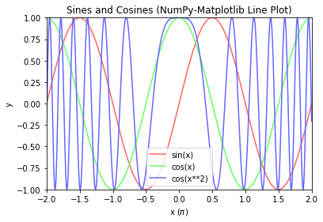
Example 2: Line Chart with x-y Axis at Zero
# NumPy-Matplotlib Line Plot: Set x-y axis at zero import matplotlib.pyplot as plt import numpy as np # Generate x: linearly spaced in degree interval, both ends included x = np.linspace(-2*np.pi, 2*np.pi, 721) # Generate y's y = np.sin(3*x)/x # Get the axes handle for fine control. Axes uses set_xxx() setters for properties ax = plt.subplot(1, 1, 1) ax.plot(x, y, 'r-', label='sin(3*x)/x') # Remove the top and right border ax.spines['top'].set_color('none') ax.spines['right'].set_color('none') # Move the bottom and left border to x and y of 0 ax.spines['bottom'].set_position(('data', 0)) ax.spines['left'].set_position(('data', 0)) # Set the x-tick position, locations and labels ax.xaxis.set_ticks_position('bottom') ax.yaxis.set_ticks_position('left') ax.set_xticks([-2*np.pi, -np.pi, 0, np.pi, 2*np.pi]) ax.set_xticklabels([r'$-2\pi$', r'$-\pi$', r'$0$', r'$+\pi$', r'$+2\pi$']) # Using latex symbol ax.set_title('Line Plot with Axis at 0 (NumPy-Matplotlib)') plt.show()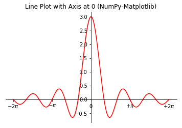
Example 3: Bar Chart
# NumPy-Matplotlib Bar Chart import matplotlib.pyplot as plt import numpy as np # Setup data x = np.arange(5) # [0, 1, ..., 4] y = np.random.randint(1, 101, len(x)) # 5 values in [1, 100] xticklabels = ['2020', '2021', '2022', '2023', '2024'] # Plot bar chart plt.bar(x, y, tick_label=xticklabels) # Bar chart with labels # default bar width is 0.8, from x-0.4 to x+0.4 plt.xlabel('Year') plt.ylabel('Sales') plt.title('Coffee & Tea Sales (NumPy-Matplotlib Bar Chart)') plt.show()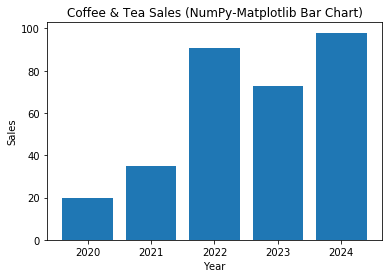
Example 4: Bar Chart (Grouped and Stacked)
# NumPy-Matplotlib Grouped and Stacked Bar Charts import matplotlib.pyplot as plt import numpy as np # Setup x and y x = np.arange(5) # [0, 1, ..., 4] y1 = np.array([1, 6, 3, 5, 2]) y2 = np.array([2, 2, 4, 5, 1]) y3 = np.array([3, 3, 2, 3, 1]) x_ticklabels = ['2020', '2021', '2022', '2023', '2024'] y_colors = ['#5B9BD5', '#ED7D31', '#70AD47'] y_labels = ['Espresso', 'Cappuccino', 'Latte'] # Setup 1 figure with 2 subplots plt.figure(figsize=(6.4, 6.4)) # in inches, default is (6.4, 4.8) # Stacked Bar Chart plt.subplot(2, 1, 1) # Set the bottom as base in y for stacking plt.bar(x, y1, color=y_colors[0], tick_label=x_ticklabels, label=y_labels[0]) plt.bar(x, y2, bottom=y1, color=y_colors[1], label=y_labels[1]) plt.bar(x, y3, bottom=y1+y2, color=y_colors[2], label=y_labels[2]) plt.xlabel('Year') plt.ylabel('Sales') plt.title('Coffee & Tea Sales (NumPy-Matplotlib Stacked Bar Chart)') plt.legend() # Extracted from plt.bar()'s label # Grouped Bar Chart plt.subplot(2, 1, 2) bar_width = 0.3 # 3*0.3 = 0.9 # Set the width in x for grouped bars plt.bar(x, y1, bar_width, color=y_colors[0], label=y_labels[0]) plt.bar(x+bar_width, y2, bar_width, color=y_colors[1], label=y_labels[1], tick_label=x_ticklabels) plt.bar(x+2*bar_width, y3, bar_width, color=y_colors[2], label=y_labels[2]) plt.xlabel('Year') plt.ylabel('Sales') plt.title('Coffee & Tea Sales (NumPy-Matplotlib Grouped Bar Chart)') plt.legend() plt.tight_layout() # To prevent overlapping of subplots plt.show()

Example 5: Histogram (Bar Chart)
# NumPy-Matplotlib Histogram # For marks of [0, 100], in 10 bins import matplotlib.pyplot as plt import numpy as np # Setup data y = np.random.normal(65, 15, 500) # Normal Distributed at mean and std dev xtick_locations = np.arange(5, 100, 10) # x=5, 15, 25, ... xtick_labels = ['0-9', '10-19', '20-29', '30-39', '40-49', '50-59', '60-69', '70-79', '80-89', '90-100'] # Setup bins and Plot bins = range(0, 101, 10) # bins are [0, 10), [10, 19), ... [90, 100] plt.hist(y, bins=bins, rwidth=0.8) # rwidth: ratio of width of bar over bin plt.xticks(xtick_locations, xtick_labels, rotation=90) plt.xlim(0, 100) # range of x-axis plt.xlabel('Mark') plt.ylabel('Number of Students') plt.title('Histogram (NumPy-Matplotlib)') plt.show()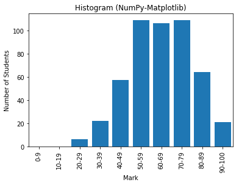
Example 6: Pie Chart
# Matplotlib Pie Chart import matplotlib.pyplot as plt x_labels = ['2020', '2021', '2022', '2023', '2024'] y = [5, 3, 6, 2, 3] explode = (0, 0, 0, 0.2, 0) # "explode" the forth slice by 0.2 plt.pie(y, labels=x_labels, explode=explode, shadow=True, startangle=90) plt.axis('equal') # Draw a circle plt.title('Pie Chart (Matplotlib)') plt.show()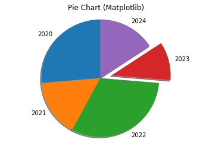
Example 7: Scatter Chart
# NumPy-Matplotlib Scatter Plot # for 2 categories of 25 points each, randomly generated import matplotlib.pyplot as plt import numpy as np xy1 = np.random.normal(8, 1, 50).reshape(-1, 2) # cat1: [x1, y1] 25 samples xy2 = np.random.normal(4, 2, 50).reshape(-1, 2) # cat2: [x2, y2] 25 samples plt.scatter(xy1[:,0], xy1[:,1], c='red', label='cat 1') plt.scatter(xy2[:,0], xy2[:,1], c='green', label='cat 2') plt.xlabel('x') plt.ylabel('y') plt.title('Scatter Plot (NumPy-Matplotlib)') plt.legend() xmin = min(xy1[:,0].min(), xy2[:,0].min()) xmax = max(xy1[:,0].max(), xy2[:,0].max()) ymin = min(xy1[:,1].min(), xy2[:,1].min()) ymax = max(xy1[:,1].max(), xy2[:,1].max()) plt.axis((xmin-1, xmax+1, ymin-1, ymax+1)) plt.show()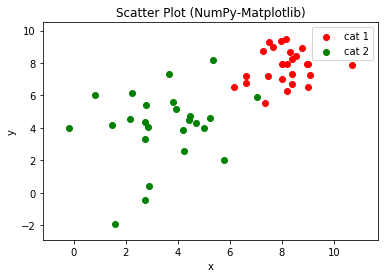
Example 8: Pseudo-color Mesh
# NumPy-Matplotlib Pseudo-color Mesh import matplotlib.pyplot as plt import numpy as np from matplotlib.colors import ListedColormap # Set up a 10x8 grid with random values in [0, 2] for 3 categories x = np.arange(5, 15) # [5, 6, ..., 14] with 10 points y = np.arange(2, 10) # [2, 3, ... 9] with 8 points z = np.random.randint(0, 3, (len(y), len(x))) # Random integers in [0, 2] cmap = ListedColormap(['#FF6666', '#66FF66', '#6666FF']) # color map for [0, 2] plt.pcolormesh(x, y, z, cmap=cmap) plt.xlabel('x') plt.ylabel('y') plt.title('Pseudocolor Mesh (NumPy-Matplotlib)') # Plot colorbar for color mesh cbar = plt.colorbar() cbar.set_ticks([0.33, 1., 1.67]) cbar.set_ticklabels(['Cat 0', 'Cat 1', 'Cat 2']) plt.show()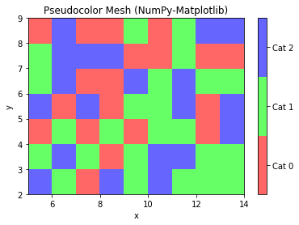
Example 8: Pseudo-color Mesh with MeshGrid
# NumPy-Matplotlib Pseudo-color Mesh with meshgrid import matplotlib.pyplot as plt import numpy as np from matplotlib.colors import ListedColormap # Setup a mesh grid and values step = 0.2 # mesh step size xx, yy = np.meshgrid(np.arange(5, 14, step), np.arange(2, 9, step)) z = np.random.randint(0, 3, xx.shape) # random integers in [0, 2] cmap = ListedColormap(['#FF6666', '#66FF66', '#6666FF']) # color map for [0, 2] plt.pcolormesh(xx, yy, z, cmap=cmap) plt.xlabel('x') plt.ylabel('y') plt.title('Pseudocolor Mesh with meshgrid (NumPy-Matplotlib)') # Plot colorbar for color mesh cbar = plt.colorbar() cbar.set_ticks([0.33, 1., 1.67]) cbar.set_ticklabels(['Cat 0', 'Cat 1', 'Cat 2']) plt.show()

Example: Contour Chart
[TODO]
Example: Polar Chart
[TODO]
Pandas
References:
- Pandas mother site @ http://pandas.pydata.org/
- Pandas API References @ https://pandas.pydata.org/pandas-docs/stable/api.html
Pandas is an open-source library providing high-performance, easy-to-use 2d tabular data structure and data analysis tools for Python. Pandas is built on top of NumPy, specializing in data analysis.
The two most important classes in Pandas are:
Series: For 1D labeled sequences.DataFrame: For 2D labeled tabular data.
To use Pandas package:
import pandas as pd
The Pandas' Series Class
A Pandas' Series is designed to represent labeled 1D sequences, where each element has an index and a value. The row-index could be a user-defined object, unique or non-unique. An integral index starting from 0 is also provided. All values have the same data type.

To create a Pandas' Series, use the constructor:
>>> import numpy as np
>>> import pandas as pd
>>> help(pd.Series)
Series(data=None, index=None, dtype=None, name=None)
# data: array-like, dict, or scaler
# index: array-like or Pandas' Index object. Same length as data. Can be non-unique.
# Default to Pandas' RangeIndex(0, 1, ..., n-1) if not provided
Constructing a Pandas' Series 1: Using a Value-List and an Index-List.
>>> s1 = pd.Series([5, 7, 2, 5, 3], index=['a', 'b', 'c', 'd', 'a'], name='x') # non-unique index >>> s1 a 5 b 7 c 2 d 5 a 3 Name: x, dtype: int64 >>> s1.index Index(['a', 'b', 'c', 'd', 'a'], dtype='object') # An Index object >>> s1.values array([5, 7, 2, 5, 3], dtype=int64) # Data values in ndarray >>> s1.dtype dtype('int64') >>> s1.name # column name 'x'
Accessing the Series: Indexing [idx], Dot .idx, and Slicing [start:stop:step]
>>> s1 = pd.Series([5, 7, 2, 5, 3], index=['a', 'b', 'c', 'd', 'a'], name='x') # Indexing and Dot-Index >>> s1['c'] # Indexing via index 2 >>> s1.c # Same as above 2 >>> type(s1.c) <class 'numpy.int64'> # Scalar >>> s1['a'] # Non-unique index a 5 a 3 Name: x, dtype: int64 >>> s1.a # Same as above a 5 a 3 Name: x, dtype: int64 >>> type(s1.a) <class 'pandas.core.series.Series'> # A Series # Slicing >>> s1['b':'d'] # Slicing via index b 7 c 2 d 5 Name: x, dtype: int64 >>> s1['b':'d':2] # Slicing with step b 7 d 5 Name: x, dtype: int64 >>> s1['a':'b'] # Cannot use non-unique index for slicing KeyError: "Cannot get left slice bound for non-unique label: 'a'" # An numeric row-index starting from 0 is also maintained >>> s1[2] # Indexing via numeric index 2 >>> s1[-1] 0 >>> s1[::2] # Slicing via numeric index a 0 c 2 a 0 Name: x, dtype: int64
Selection with a List of Indexes
# Selection (filtering) with a list of indexes
>>> s1[['a', 'c']]
a 5
a 3
c 2
Name: x, dtype: int64
Element-wise Operations
# Element-wise Assignment via Indexing
>>> s1['a'] = 0
>>> s1
a 0
b 7
c 2
d 5
a 0
Name: x, dtype: int64
Constructing a Pandas' Series 2: From a Value-List with Default Numeric Index
>>> s1 = pd.Series([5, 7, 2, 7, 3]) >>> s1 0 5 1 7 2 2 3 7 4 3 dtype: int64 >>> s1.index RangeIndex(start=0, stop=5, step=1) # An iterator >>> s1.values array([5, 7, 2, 7, 3], dtype=int64) # Indexing >>> s1[1] 7 >>> s1[-1] # Cannot use negative index in this case! KeyError: -1 # Slicing >>> s1[::2] 0 5 2 2 4 3 dtype: int64
Constructing a Pandas' Series 3: From a NumPy's 1D ndarray
>>> arr1d = np.array([1.1, 2.2, 3.3, 4.4])
>>> s1 = pd.Series(arr1d, index=['a', 'b', 'c', 'd'])
>>> s1
a 1.1
b 2.2
c 3.3
d 4.4
dtype: float64
# The NumPy's array is passed by reference.
# Modify NumPy's array affects Pandas' Series
>>> arr1d[0] = 99
>>> s1
a 99.0
b 2.2
c 3.3
d 4.4
dtype: float64
Construct a Pandas' Series 4: From another Pandas' Series
>>> s1 = pd.Series([11, 22, 33, 44], index=['a', 'b', 'c', 'd']) >>> s2 = pd.Series(s1) >>> s2 a 11 b 22 c 33 d 44 dtype: int64 >>> s2 is s1 False # different objects # But the Series is passed by reference >>> s1['d'] = 88 # affect s4 too >>> s2 a 11 b 22 c 33 d 88 dtype: int64
Constructing a Pandas' Series 5: From a Python's Dictionary as Index-Value Pairs
>>> dict = {'a': 11, 'b': 22, 'c': 33, 'd': 44} # keys are unique in dictionary
>>> s1 = pd.Series(dict)
>>> s1
a 11
b 22
c 33
d 44
dtype: int64
# If index is provided, match index with the dict's key
>>> s2 = pd.Series(dict, index=['b', 'd', 'a', 'c', 'aa'])
>>> s2
b 22.0 # Order according to index
d 44.0
a 11.0
c 33.0
aa NaN # Missing value for this index is assigned NaN
dtype: float64 # NaN is float, all elements also converted to float
Operations on Series
Operations between a Series and a Scalar
The NumPy's element-wise arithmetic operators (+, -, *, /, //, %, **) and comparison operators (==, !=, >, <, >=, <=), as well as NumPy's module-level functions (such as sum(), min(), max()) are extended to support Pandas' Series. For examples,
>>> s1 = pd.Series([5, 4, 3, 2, 1], index=['a', 'b', 'c', 'd', 'e']) >>> s1 a 5 b 4 c 3 d 2 e 1 dtype: int64 # Series ⊕ scalar >>> s1 + 1 a 6 b 5 c 4 d 3 e 2 >>> s1 > 3 a True b True c False d False e False dtype: bool >>> s1[s1 > 3] # Filtering with boolean Series a 5 b 4 dtype: int64
Operations between Two Series are Index-based
Operations between Series (+, -, /, *, **) align values based on their index, which need not be the same length. The result index will be the sorted union of the two indexes.
>>> s1 = pd.Series([1, 2, 3, 4, 5], index=['a', 'b', 'c', 'd', 'e']) >>> s2 = pd.Series([4, 3, 2, 1], index=['c', 'a', 'b', 'aa']) >>> s1 a 1 b 2 c 3 d 4 e 5 dtype: int64 >>> s2 c 4 a 3 b 2 aa 1 dtype: int64 # Operation aligns on their index. Resultant index is the sorted union >>> s1 + s2 a 4.0 # this index on both Series aa NaN # this index is not in both, assign NaN b 4.0 c 7.0 d NaN e NaN dtype: float64 # All elements converted to float, as NaN is float
Statistical Methods on Series
NumPy's module-level statistical functions are extended to support Pandas' Series. For examples,
>>> s1 = pd.Series([5, 4, 3, 2, 1], index=['a', 'b', 'c', 'd', 'e']) >>> np.sum(s1) # No pd.sum() 15 >>> s1.sum() # Same as above. 15 >>> np.cumsum(s1) a 5 b 9 c 12 d 14 e 15 dtype: int64
NaN (Not A Number), Inf (Positive Infinity) and -Inf (Negative Infinity)
The IEEE 754 standard for floating point representation supports 3 special floating point numbers (See "Data Representation" article):
Inf(Positive Integer):1/0, all positive floats are smaller thanInf.- -
Inf(Negative Infinity):-1/0, all negative floats are bigger than-Inf. NaN(Not a Number):0/0
For examples,
# Creating Inf, -Inf, NaN using float() >>> f1, f2, f3 = float('inf'), float('-inf'), float('nan') >>> f1, f2, f3 (inf, -inf, nan) >>> type(f1), type(f2), type(f3) (<class 'float'>, <class 'float'>, <class 'float'>) # Checking for infinity: math.isinf() >>> import math >>> isinf(f1), isinf(f2), isinf(f3) >>> math.isinf(f1), math.isinf(f2), math.isinf(f3) (True, True, False) # Using inf to set the initial min and max value >>> initial_value = 5 >>> min, max = min(5, float('inf')), max(5, float('-inf')) >>> min, max (5, 5) # You can also use the attributes in math module >>> f11, f12, f13 = math.inf, -math.inf, math.nan >>> f11, f12, f13 (inf, -inf, nan) # Or the attributes in numpy module >>> f21, f22, f23 = np.inf, -np.inf, np.nan >>> f21, f22, f23 (inf, -inf, nan)
In Data Analysis, NaN is often used to represent missing data, and needs to be excluded from statistical operations. Hence, statistical methods from ndarray have been overridden in Pandas to automatically exclude NaN. For examples,
# NumPy's ndarray does not excluded nan in statistical methods >>> m1 = np.arange(12, dtype=float).reshape(3, 4) >>> m1[0, 1] = np.nan # nan is a float, all elements converted to float >>> m1 array([[ 0., nan, 2., 3.], [ 4., 5., 6., 7.], [ 8., 9., 10., 11.]]) >>> m1.sum() nan >>> m1.sum(axis=0) array([12., nan, 18., 21.]) # Pandas excludes nan in statistical methods >>> s1 = pd.Series([1, 2, np.NaN, 4, 5]) >>> s1 0 1.0 1 2.0 2 NaN 3 4.0 4 5.0 dtype: float64 # nan is float, all elements converted to float >>> s1.sum() 12.0 # nan excluded
More Statistics Methods
>>> s1 = pd.Series([3, 2, 2, 1, np.nan, 6, 8, 4], index=['a', 'b', 'c', 'd', 'e', 'f', 'g', 'h']) >>> s1.describe() count 7.000000 # nan excluded mean 3.714286 std 2.497618 min 1.000000 25% 2.000000 50% 3.000000 75% 5.000000 max 8.000000 dtype: float64 # These methods are extended from NumPy's ndarray, but nan excluded >>> s1.mean() 3.7142857142857144 >>> np.mean(s1) # Same as above 3.7142857142857144 >>> s1.median() 3.0 >>> s1.std() 2.4976179127511156 >>> s1.var()
6.238095238095238
Correlation and Covariance between 2 Series
>>> s1 = pd.Series([3, 2, 2, 1, 6, 8, 4], index=['a', 'b', 'c', 'd', 'e', 'f', 'g']) >>> s2 = pd.Series([1, 1, 5, 1, 6, 9, 3], index=['a', 'b', 'c', 'd', 'e', 'f', 'g']) >>> s3 = pd.Series([1, 1, 5, 1, 6, 3, 9], index=['a', 'b', 'c', 'd', 'e', 'g', 'f']) # for verifying index-align # NumPy's correlation coefficients (not extended to Pandas) # NumPy's ndarray does not support index >>> np.corrcoef(s1, s2) array([[1. , 0.85044339], [0.85044339, 1. ]]) # 2D array >>> np.corrcoef(s1, s3) array([[1. , 0.3327822], [0.3327822, 1. ]]) # Different results, non-index-align for NumPy's operations # Covariance (extended from NumPy to Pandas but index-align) >>> s1.cov(s2) 6.57142857142857 >>> s1.cov(s3) 6.57142857142857 # Same result, index-align # Pandas' correlation coefficient index aligned >>> s1.corr(s2) # No np.corr() 0.8504433897747548 # Scalar >>> s1.corr(s3) 0.8504433897747548
The Pandas' Series Member Functions unique(), value_counts(), isin(), isnull(), notnull()
>>> s1 = pd.Series([1, 2, 2, 1, 3, 3, 1], index=['a', 'a', 'b', 'c', 'c', 'b', 'a']) # with duplicate values and indexes >>> s1 a 1 a 2 b 2 c 1 c 3 b 3 a 1 dtype: int64 # Series.unique() -> ndarray >>> s1.unique() # filter unique values array([1, 2, 3], dtype=int64) # s1.duplicated() -> bool_Series >>> s1.duplicated() # Check duplicated values a False a False b True # value 2 duplicated c True c False b True a True dtype: bool # Series.value_counts() -> int_Series >>> s1.value_counts() # unique value vs counts 1 3 3 2 2 2 dtype: int64 # Series.isin() -> bool_Series >>> s1.isin([2, 3, 4]) # Check if the value is in the given list element-wise, return bool a False a True b True c False c True b True a False dtype: bool >>> s1[s1.isin([2, 3, 4])] # Filter with a boolean Series a 2 b 2 c 3 b 3 dtype: int64 # Series.isnull() -> bool_Series # Series.notnull() -> bool_Series >>> s2 = pd.Series([1, 2, np.NaN, 4, 5]) # We could use np.NaN (Not A Number) to indicate missing value or non-numerical value >>> s2.isnull() # Check if value is NaN element-wise 0 False 1 False 2 True 3 False 4 False dtype: bool >>> s2.notnull() # Inverse of isnull() 0 True 1 True 2 False 3 True 4 True dtype: bool >>> s2[s2.notnull()] # Filter out NaN 0 1.0 1 2.0 3 4.0 4 5.0 dtype: float64
Sorting: sort_index(), sort_values()
Ranking: rank()
>>> s1 = pd.Series([3, 2, 2, 1, 6, 8, 4], index=['a', 'd', 'b', 'c', 'c', 'e', 'a']) >>> s1.sort_index() a 3 a 4 b 2 c 1 c 6 d 2 e 8 dtype: int64 >>> s1.sort_values() c 1 d 2 b 2 a 3 a 4 c 6 e 8 dtype: int64 >>> s1.rank() a 4.0 d 2.5 b 2.5 c 1.0 c 6.0 e 7.0 a 5.0 dtype: float64
Pandas' Categorical Data Type
A categorical variable takes on a limited, and usually fixed, number of possible values. There are two kinds of categorical data:
- Nominal (Unordered): e.g., gender, social class, blood type, country.
- Ordinal (Ordered): e.g. "strongly agree" vs "agree", band 1, 2, 3,...
Numerical operations (such as additions, divisions, …) cannot be applied to categories data.
Pandas supports a "category" data type (dtype). All values of categorical data are either in categories or np.nan (for missing data).
Constructing a Categorical Series 1: Using dtype='category'
>>> s1 = pd.Series(['a', 'b', 'c', 'd', 'a'], dtype='category') >>> s1 0 a 1 b 2 c 3 d 4 a dtype: category Categories (4, object): [a, b, c, d] >>> s1.dtype CategoricalDtype(categories=['a', 'b', 'c', 'd'], ordered=False) >>> s1.cat.categories Index(['a', 'b', 'c', 'd'], dtype='object') >>> s1.cat.ordered False >>> s1.cat.codes 0 0 1 1 2 2 3 3 4 0 dtype: int8 >>> s1.value_counts() a 2 d 1 c 1 b 1 dtype: int64
Notes:
- The categories are inferred from the data
- Always "Unordered"
Constructing a Categorical Series 2: Using a CategoricalDtype
# Create a customized 'CategoricalDType' >>> from pandas.api.types import CategoricalDtype >>> cat = CategoricalDtype(categories=['b', 'c', 'd'], ordered=True) >>> cat CategoricalDtype(categories=['b', 'c', 'd'], ordered=True) # ordered >>> s1 = pd.Series(['a', 'b', 'c', 'a'], dtype=cat) >>> s1 0 NaN # no category 1 b 2 c 3 NaN dtype: category Categories (3, object): [b < c < d] >>> s1.min(), s1.max() (nan, 'c')
Constructing a Categorical Series 2: Converting using astype()
>>> s1 = pd.Series(['a', 'b', 'b', 'a', 'c'])
>>> s1
0 a
1 b
2 b
3 a
4 c
dtype: object
>>> s2 = s1.astype('category')
>>> s2
0 a
1 b
2 b
3 a
4 c
dtype: category
Categories (3, object): [a, b, c] # Unordered
>>> s2.dtype
CategoricalDtype(categories=['a', 'b', 'c'], ordered=False)
>>> from pandas.api.types import CategoricalDtype
>>> cat = CategoricalDtype(categories=['b', 'c', 'd'], ordered=True)
>>> s3 = pd.Series(['a', 'b', 'c', 'a'])
>>> s3 = s3.astype(cat)
>>> s3
0 NaN
1 b
2 c
3 NaN
dtype: category
Categories (3, object): [b < c < d]
Constructing a Categorical Series 3: via Pandas' Categorical()
# Create an "ordered" Categorical >>> cat = pd.Categorical(['a','b','c','b'], ordered=True, categories=['c', 'b', 'a']) >>> cat [a, b, c, b] Categories (3, object): [c < b < a] # Ordered >>> type(cat) <class 'pandas.core.arrays.categorical.Categorical'> # Create a Series from Categorical >>> s1 = pd.Series(cat) >>> s1 0 a 1 b 2 c 3 b dtype: category Categories (3, object): [c < b < a] >>> s1.min(), s1.max() ('c', 'a')
Operations on Categorical Data
# Sorting Ordered Categorical Data
>>> s1 = pd.Series(['a', 'b', 'c', 'a']).astype(CategoricalDtype(ordered=True))
>>> s1
0 a
1 b
2 c
3 a
dtype: category
Categories (3, object): [a < b < c]
>>> s1.sort_values(inplace=True)
>>> s1
0 a
3 a
1 b
2 c
dtype: category
Categories (3, object): [a < b < c]
[TODO] more
The Pandas' DataFrame Class
A Pandas' DataFrame models a labeled 2D tabular data, similar to an Excel spreadsheet, or a SQL relational database table. The pandas' DataFrame is an extension of Pandas' 1D labeled sequences Series to two-dimensional. A DataFrame consists of a number of columns with a common row index (label), and a column header. Each column has its own data type. All elements in a column have the same data type.
To construct a Pandas' DataFrame, invoke the constructor:
>>> import pandas as pd
>>> help(pd.DataFrame)
DataFrame(data=None, index=None, columns=None, dtype=None)
# data: can be a NumPy ndarray, dict, or Pandas DataFrame
# dict can contain Series, arrays, constants, or list-like objects
# index: array-like or an Index object, default to RangeIndex
# columns: array-like or an Index object, default to RangeIndex
The data can be obtained in the following ways:
- from columns of Pandas'
Series, orlist, packed in a dictionary with column names. - from a 2D NumPy's
ndarray. - from a file, such as a CSV file.
- from another Pandas'
DataFrame.
Creating a Pandas' DataFrame 1: From columns of Series, packed in a dict with Column Names
>>> import numpy as np
>>> import pandas as pd
>>> s1 = pd.Series([1, 2, 3], index=['a', 'b', 'c'])
>>> s1
a 1
b 2
c 3
dtype: int64
>>> s2 = pd.Series([11, 33, 22, 44], index=['a', 'c', 'b', 'd'])
>>> s2
a 11
c 33
b 22
d 44
dtype: int64
>>> df = pd.DataFrame({'x1': s1, 'x2': s2}) # dictionary of column-header:Series
>>> df # DataFrame is a 2D table with column header and row index
# Index-align, resultant index is sorted union of both indexes
x1 x2
a 1.0 11
b 2.0 22
c 3.0 33
d NaN 44 # Missing value is assigned NaN (Not A Number) which is a float
# column x1 is converted to float
>> type(df)
<class 'pandas.core.frame.DataFrame'>
# Check Data Types
>>> df.dtypes # Data types of columns
x1 float64
x2 int64
dtype: object
# Select a column
>>> df['x1'] # Select a column
a 1.0
b 2.0
c 3.0
d NaN
Name: x1, dtype: float64
>>> df.x1 # Same as above
a 1.0
b 2.0
c 3.0
d NaN
Name: x1, dtype: float64
>>> type(df['x1'])
<class 'pandas.core.series.Series'> # A Series
>>> df.x1.dtype # Data type of a column
dtype('float64')
# Select a list of columns
>>> df[['x1', 'x2']]
x1 x2
a 1.0 11
b 2.0 22
c 3.0 33
d NaN 44
# Check column-header, row-index and data-value
>>> df.columns # columns header
Index(['x1', 'x2'], dtype='object')
>>> df.index # rows index
Index(['a', 'b', 'c', 'd'], dtype='object')
>>> df.values # data
array([[ 1., 11.],
[ 2., 22.],
[ 3., 33.],
[nan, 44.]]) # Return a ndarray (of the same dtype)
>>> type(df.values)
<class 'numpy.ndarray'>
# Write (Save) to CSV text file
>>> df.to_csv('data_with_labels.csv') # default with column header and row index
# Contents of the CSV file
,x1,x2
a,1.0,11
b,2.0,22
c,3.0,33
d,,44
>>> df.to_csv('data_without_labels.csv', index=False, header=False) # No column header and row index
# Contents of the CSV file
1.0,11
2.0,22
3.0,33
,44
Creating a Pandas' DataFrame 2: Load from a CSV file
>>> df1 = pd.read_csv('data_with_labels.csv') # default with column header, no row index
>>> df1
Unnamed: 0 x1 x2
0 a 1.0 11
1 b 2.0 22
2 c 3.0 33
3 d NaN 44
>>> df2 = pd.read_csv('data_with_labels.csv', index_col=0) # First column is the row index
>>> df2
x1 x2
a 1.0 11
b 2.0 22
c 3.0 33
d NaN 44
>>> df3 = pd.read_csv('data_without_labels.csv', names=['y1', 'y2']) # Provide column names
>>> df3
y1 y2
0 1.0 11
1 2.0 22
2 3.0 33
3 NaN 44
# Read csv from Console
>>> from io import StringIO # Python 3
>>> rawText = StringIO("""
x1 x2 cat
0 101.23 1.39 Medium
1 103.26 1.86 Medium
2 202.76 8.87 High
3 142.40 5.25 Medium-High
""")
>>> rawText
<_io.StringIO object at ...>
>>> df4 = pd.read_csv(rawText, sep = "\s+") # 'sep' is one or more spaces
>>> df4
x1 x2 cat
0 101.23 1.39 Medium
1 103.26 1.86 Medium
2 202.76 8.87 High
3 142.40 5.25 Medium-High
>>> df4.dtypes
x1 float64
x2 float64
cat object
dtype: object
Creating a Pandas' DataFrame 3: From columns of list, packed in a dict with Column Names
>>> lst_x1 = [1, 2, 3, 4, 5] >>> lst_x2 = [1.1, 2.2, 3.3, 4.4, 5.5] >>> lst_x3 = ['a', 'b', 'c', 'd', 'e'] # The column lists shall have the same length >>> df = pd.DataFrame({'x1': lst_x1, 'x2': lst_x2, 'x3': lst_x3}) # dict of {columnName:lst} >>> df x1 x2 x3 0 1 1.1 a 1 2 2.2 b 2 3 3.3 c 3 4 4.4 d 4 5 5.5 e >>> df.dtypes x1 int64 x2 float64 x3 object dtype: object # Notes: # df = pd.DataFrame({'x1': pd.Series(lst_x1), 'x2': pd.Series(lst_x2)}) # Missing values get NaN # Adding a column >>> df['x4'] = 9 # Scalar broadcasts to all rows >>> df x1 x2 x3 x4 0 1 1.1 a 9 1 2 2.2 b 9 2 3 3.3 c 9 3 4 4.4 d 9 4 5 5.5 e 9 # Add another column >>> df['x5'] = [51, 52, 53, 54, 55] # length of list shall match index >>> df x1 x2 x3 x4 x5 0 1 1.1 a 9 51 1 2 2.2 b 9 52 2 3 3.3 c 9 53 3 4 4.4 d 9 54 4 5 5.5 e 9 55 >>> df[['x1','x5', 'x2']] x1 x5 x2 0 1 51 1.1 1 2 52 2.2 2 3 53 3.3 3 4 54 4.4 4 5 55 5.5 # Editing row index >>> df.index RangeIndex(start=0, stop=5, step=1) >>> df.index = ['r1', 'r2', 'r3', 'r4', 'r5'] >>> df.index Index(['r1', 'r2', 'r3', 'r4', 'r5'], dtype='object') >>> df x1 x2 x3 x4 x5 r1 1 1.1 a 9 51 r2 2 2.2 b 9 52 r3 3 3.3 c 9 53 r4 4 4.4 d 9 54 r5 5 5.5 e 9 55 # Selecting columns by column names >>> df['x3'] 0 a 1 b 2 c 3 d 4 e Name: x3, dtype: object >>> df.x3 # Same as above 0 a 1 b 2 c 3 d 4 e Name: x3, dtype: object >>> df[['x1','x5', 'x2']] # Reorder x1 x5 x2 0 1 51 1.1 1 2 52 2.2 2 3 53 3.3 3 4 54 4.4 4 5 55 5.5 # Editing column header >>> df.columns Index(['x1', 'x2', 'x3', 'x4', 'x5'], dtype='object') >>> df.columns = ['AA', 'BB', 'CC', 'DD', 'EE'] >>> df AA BB CC DD EE r1 1 1.1 a 9 51 r2 2 2.2 b 9 52 r3 3 3.3 c 9 53 r4 4 4.4 d 9 54 r5 5 5.5 e 9 55 # Column (Series) Operations >>> type(df['AA']) # Column is a Pandas' Series <class 'pandas.core.series.Series'> >>> df['AA'] += 1 # Apply arithmetic operation >>> df AA BB CC DD EE r1 2 1.1 a 9 51 r2 3 2.2 b 9 52 r3 4 3.3 c 9 53 r4 5 4.4 d 9 54 r5 6 5.5 e 9 55 >>> del df['CC'] # del column >>> df AA BB DD EE r1 2 1.1 9 51 r2 3 2.2 9 52 r3 4 3.3 9 53 r4 5 4.4 9 54 r5 6 5.5 9 55
Creating a Pandas' DataFrame 4: From NumPy's Multi-dimensional Array
>>> m = np.arange(1, 13).reshape(3, 4)
>>> m
array([[ 1, 2, 3, 4],
[ 5, 6, 7, 8],
[ 9, 10, 11, 12]])
>>> df1 = pd.DataFrame(m) # with default column-header and row-index
>>> df2 = pd.DataFrame(m, index=['r1', 'r2', 'r3'], columns=['c1', 'c2', 'c3', 'c4'], dtype=float)
# Set the column-header, row-index and datatype
>>> df2
c1 c2 c3 c4
r1 99.0 2.0 3.0 4.0
r2 5.0 6.0 7.0 8.0
r3 9.0 10.0 11.0 12.0
# Modifying the NumPy's array
>>> m[0, 0] = 99
>>> df1
0 1 2 3
0 99 2 3 4 # This is affected, passed by reference
1 5 6 7 8
2 9 10 11 12
>>> df2
c1 c2 c3 c4
r1 1.0 2.0 3.0 4.0 # This is not affected due to change in dtype
r2 5.0 6.0 7.0 8.0
r3 9.0 10.0 11.0 12.0
Creating a Pandas' DataFrame 5: From nested-list
>>> data = [[1, 2, 3], [4, 5, 6]]
>>> df = pd.DataFrame(data) # default column-header and row-index
>>> df
0 1 2
0 1 2 3
1 4 5 6
>>> df1 = pd.DataFrame([[1, 2, 3, 4]] * 3, columns=['a', 'b', 'c', 'd'])
>>> df1
a b c d
0 1 2 3 4
1 1 2 3 4
2 1 2 3 4
Operations on DataFrame
Selecting a Column or a List of Columns: [colHdr|colHdrLst]
dataframe[colHdr|colHdrLst]: Access a column or a list of columns
>>> df = pd.DataFrame({'x1': [1, 2, 3, 4, 5],
'x2': [1.1, 2.2, 3.3, 4.4, 5.5],
'x3': ['a', 'b', 'c', 'd', 'e']},
index=['r1', 'r2', 'r3', 'r4', 'r5'])
>>> df
x1 x2 x3
r1 1 1.1 a
r2 2 2.2 b
r3 3 3.3 c
r4 4 4.4 d
r5 5 5.5 e
>>> df['x2'] # Select one column with indexing
r1 1.1
r2 2.2
r3 3.3
r4 4.4
r5 5.5
Name: x2, dtype: float64
>>> type(df['x2'])
<class 'pandas.core.series.Series'> # A one-column Series
>>> df.x2 # Select one column with dot
r1 1.1
r2 2.2
r3 3.3
r4 4.4
r5 5.5
Name: x2, dtype: float64
>>> df[['x3', 'x1']] # Select a list of columns
x3 x1
r1 a 1
r2 b 2
r3 c 3
r4 d 4
r5 e 5
>>> type(df[['x3', 'x1']])
<class 'pandas.core.frame.DataFrame'> # A multi-column DataFrame
Selecting (Filtering) Rows and Columns: loc[], iloc[], at[], iat[]
dataframe.loc[rowIdx, colHdr]: Access a group of rows and columns by label(s) or a boolean array. Allowed inputs are:
- A single label, e.g.,
'a'. - A list or array of labels, e.g.,
['a', 'b', 'c']. - A slice object with labels, e.g.,
'a':'f'(both included). - A boolean array of the same length as the axis being sliced, e.g., [
True,False,True]. - A callable function with one argument (the calling
Series,DataFrameorPanel) and that returns valid output for indexing (one of the above)
dataframe.iloc[rowIdxI, colHdrI]: for integer-location based indexing for selection by position. Allowed inputs are:
- An integer, e.g.,
5. - A list or array of integers, e.g.,
[4, 3, 0]. - A slice object with
ints, e.g.,1:7:2(start included, end excluded). - A boolean array of the same length as the axis being sliced, e.g., [
True,False,True]. - A callable function with one argument (the calling
Series,DataFrameorPanel) and that returns valid output for indexing (one of the above).
dataframe.at[rowIdx, colHdr]: Access a single value for a row/column label pair.
dataframe.iat[rowIdx, colHdr]: Access a single value for a row/column integer index.
# Create a Pandas' DataFrame >>> df = pd.DataFrame({'x1': [1, 2, 3, 4, 5, 6, 7], 'x2': [1.1, 2.2, 3.3, 4.4, 5.5, 6.6, 7.7], 'x3': ['a', 'b', 'c', 'd', 'e', 'f', 'g']}, index=['r1', 'r2', 'r3', 'r4', 'r5', 'r6', 'r7']) >>> df x1 x2 x3 r1 1 1.1 a r2 2 2.2 b r3 3 3.3 c r4 4 4.4 d r5 5 5.5 e r6 6 6.6 f r7 7 7.7 g >>> df.head(2) # First n rows, default n=5 x1 x2 x3 r1 1 1.1 a r2 2 2.2 b >>> df.tail(2) # Last n rows x1 x2 x3 r5 5 5.5 e r6 6 6.6 f r7 7 7.7 g # Selection (Filtering) via [row-index, column-header] using loc() and iloc() >>> help(df.loc) # row-index >>> df.loc['r3'] x1 3 x2 3.3 x3 c Name: r3, dtype: object >>> type(df.loc['r3']) <class 'pandas.core.series.Series'> # return a one-column Series >>> df.loc['r3':'r5'] # by row start and end index, both included x1 x2 x3 r3 3 3.3 c r4 4 4.4 d r5 5 5.5 e >>> type(df.loc['r3':'r5']) <class 'pandas.core.frame.DataFrame'> # return a multi-column DataFrame >>> df.loc[['r2', 'r4']] # list of indexes x1 x2 x3 r2 2 2.2 b r4 4 4.4 d # RowIndex and ColumnHeader >>> df.loc['r3', 'x3'] # Single cell 'c' >>> df.loc[['r4', 'r2'], ['x3', 'x1']] # row and column lists x3 x1 r4 d 4 r2 b 2 >>> df.loc['r2':'r4', 'x1':'x2'] # row and column slices x1 x2 r2 2 2.2 r3 3 3.3 r4 4 4.4 >>> df.loc['r2':'r5':2, 'x1':'x3':2] # slices with step x1 x3 r2 2 b r4 4 d >>> df.loc[[True, False, True, True, False, False, False]] # bool list with the same length as row axis x1 x2 x3 r1 1 1.1 a r3 3 3.3 c r4 4 4.4 d >>> df.loc[df['x1'] > 5] # Conditional that returns a bool list x1 x2 x3 r6 6 6.6 f r7 7 7.7 g >>> df.loc[lambda df: df['x1'] > 5] # A function that returns a bool list x1 x2 x3 r6 6 6.6 f r7 7 7.7 g # Using numerical indexes >>> help(df.iloc) >>> df.iloc[2] # by row integer index (positional indexing) x1 3 x2 3.3 x3 c Name: r3, dtype: object >>> df.iloc[2, 2] # row and column integer indexes 'c' >>> df.iloc[2:5] # by start (inclusive) and end (exclusive) integer index x1 x2 x3 r3 3 3.3 c r4 4 4.4 d r5 5 5.5 e >>> df.iloc[::3, ::2] x1 x3 r1 1 a r4 4 d r7 7 g # Selection (Filtering) via [row-index, column-header] using at() and iat() >>> help(df.at) >>> df.at['r3', 'x2'] 3.3 >>> df['x2']['r3'] # Same as above 3.3 >>> help(df.iat) >>> df.iat[2, 1] 3.3
Testing Membership: isin()
>>> df = pd.DataFrame(np.arange(1,13).reshape(3, 4)) >>> df 0 1 2 3 0 1 2 3 4 1 5 6 7 8 2 9 10 11 12 >>> df.isin([5]) # Check if the data-values are in the list 0 1 2 3 0 False False False False 1 True False False False 2 False False False False >>> df.isin([5, 8, 13]) 0 1 2 3 0 False False False False 1 True False False True 2 False False False False >>> df[df.isin([5, 8, 13])] # Filtering with a boolean DataFrame 0 1 2 3 0 NaN NaN NaN NaN 1 5.0 NaN NaN 8.0 2 NaN NaN NaN NaN
Operations on Row-Index
>>> df = pd.DataFrame(np.arange(1,13).reshape(3, 4), index=['red', 'green', 'blue'])
>>> df
0 1 2 3
red 1 2 3 4
green 5 6 7 8
blue 9 10 11 12
>>> df.index
Index(['red', 'green', 'blue'], dtype='object')
>>> df.index.is_unique
True
# Dropping rows
>>> df.drop(['green', 'red']) # Drop rows with these indexes, return a new DataFrame
0 1 2 3
blue 9 10 11 12
# Dropping columns
>>> df.drop([0, 3], axis=1) # axis=1 for columns
1 2
red 2 3
green 6 7
blue 10 11
Arithmetic and Comparison Operations Between a DataFrame and a Scalar
>>> df = pd.DataFrame(np.arange(1,13).reshape(3, 4), index=['red', 'green', 'blue'], columns=['c1', 'c2', 'c3', 'c4'])
>>> df
c1 c2 c3 c4
red 1 2 3 4
green 5 6 7 8
blue 9 10 11 12
>>> df + 10 # apply to all values element-wise
c1 c2 c3 c4
red 11 12 13 14
green 15 16 17 18
blue 19 20 21 22
>>> df * 2
c1 c2 c3 c4
red 2 4 6 8
green 10 12 14 16
blue 18 20 22 24
>>> df < 8
c1 c2 c3 c4
red True True True True
green True True True False
blue False False False False
Functions on DataFrame
You can apply most of the NumPy's functions (such as mathematical and statistical functions) on DataFrame. For examples,
>>> df = pd.DataFrame(np.arange(1,13).reshape(3, 4), index=['red', 'green', 'blue'], columns=['c1', 'c2', 'c3', 'c4'])
>>> df
c1 c2 c3 c4
red 1 2 3 4
green 5 6 7 8
blue 9 10 11 12
# Universal function (from NumPy) applicable to all data-values
>>> np.sqrt(df)
c1 c2 c3 c4
red 1.000000 1.414214 1.732051 2.000000
green 2.236068 2.449490 2.645751 2.828427
blue 3.000000 3.162278 3.316625 3.464102
# Aggregate function (from NumPy) on each column
>>> np.sum(df)
c1 15
c2 18
c3 21
c4 24
dtype: int64
>>> np.sum(df, axis=1) # Row-wise
red 10
green 26
blue 42
dtype: int64
>>> np.mean(df)
c1 5.0
c2 6.0
c3 7.0
c4 8.0
dtype: float64
>>> np.min(df)
c1 1
c2 2
c3 3
c4 4
dtype: int32
>>> np.cumsum(df)
c1 c2 c3 c4
red 1 2 3 4
green 6 8 10 12
blue 15 18 21 24
DataFrame.apply() and DataFrame.applymap()
You can apply an arbitrary function over a DataFrame via apply(func) on each column; and applymap(func) on each element.
>>> df = pd.DataFrame(np.arange(1,13).reshape(3, 4), index=['red', 'green', 'blue'], columns=['c1', 'c2', 'c3', 'c4'])
>>> df
c1 c2 c3 c4
red 1 2 3 4
green 5 6 7 8
blue 9 10 11 12
# DataFrame.apply(func), where func takes a Series and returns a scalar or Series
# apply(func) applies the func to each column (or row) of the DataFrame.
>>> help(df.apply)
>>> df.apply(np.sum)
c1 15
c2 18
c3 21
c4 24
dtype: int64
>>> df.apply(np.sum, axis=1) # Apply row-wise
red 10
green 26
blue 42
dtype: int64
# User-defined function
>>> df.apply(lambda lst: lst.max() - lst.min()) # Find the range
c1 8
c2 8
c3 8
c4 8
dtype: int64
# Check func's argument and return value
>>> def f(x): print(x, type(x)); return 1 # Return a scalar
>>> df.apply(f)
red 1
green 5
blue 9
Name: c1, dtype: int32 <class 'pandas.core.series.Series'> # argument is a Series
......
c1 1
c2 1
c3 1
c4 1
dtype: int64
>>> df.apply(lambda s: [1, 2, 3]) # Can return a list of the same-length
c1 c2 c3 c4
red 1 1 1 1
green 2 2 2 2
blue 3 3 3 3
>>> df.apply(lambda s: s+1) # Return a Series with incremented value
c1 c2 c3 c4
red 2 3 4 5
green 6 7 8 9
blue 10 11 12 13
>>> df.apply(lambda s: pd.Series({'min': s.min(), 'max': s.max()})) # Return a new Series
c1 c2 c3 c4
min 1 2 3 4
max 9 10 11 12
# DataFrame.applymap(func), where func takes a scalar and returns a scalar
# applymap(func) applies the func to each data-value
>>> df.applymap(lambda x: x+1)
c1 c2 c3 c4
red 2 3 4 5
green 6 7 8 9
blue 10 11 12 13
Statistics
>>> df = pd.DataFrame([[4, 1, 10, 2], [6 , 7, 4, 2], [8, 4, 9, 1]], index=['red', 'green', 'blue'], columns=['c1', 'c2', 'c3', 'c4'])
>>> df
c1 c2 c3 c4
red 4 1 10 2
green 6 7 4 2
blue 8 4 9 1
>>> help(df.describe)
>>> df.describe()
c1 c2 c3 c4
count 3.0 3.0 3.000000 3.000000
mean 6.0 4.0 7.666667 1.666667
std 2.0 3.0 3.214550 0.577350
min 4.0 1.0 4.000000 1.000000
25% 5.0 2.5 6.500000 1.500000
50% 6.0 4.0 9.000000 2.000000
75% 7.0 5.5 9.500000 2.000000
max 8.0 7.0 10.000000 2.000000
>>> df.mean()
c1 6.000000
c2 4.000000
c3 7.666667
c4 1.666667
dtype: float64
>>> df.std() # Standard deviation
c1 2.00000
c2 3.00000
c3 3.21455
c4 0.57735
dtype: float64
>>> df.var() # Variance
c1 4.000000
c2 9.000000
c3 10.333333
c4 0.333333
dtype: float64
>>> df.median()
c1 6.0
c2 4.0
c3 9.0
c4 2.0
dtype: float64
>>> df.corr() # Correlation Coefficients
c1 c2 c3 c4
c1 1.000000 0.500000 -0.155543 -0.866025
c2 0.500000 1.000000 -0.933257 0.000000
c3 -0.155543 -0.933257 1.000000 -0.359211
c4 -0.866025 0.000000 -0.359211 1.000000
>>> df.cov() # Covariance
c1 c2 c3 c4
c1 4.0 3.0 -1.000000 -1.000000
c2 3.0 9.0 -9.000000 0.000000
c3 -1.0 -9.0 10.333333 -0.666667
c4 -1.0 0.0 -0.666667 0.333333
Sorting on Index and value, and Ranking
>>> df = pd.DataFrame(np.random.randint(1, 10, (3, 4)), index=['red', 'green', 'blue'], columns=['c1', 'c2', 'c3', 'c4'])
>>> df
c1 c2 c3 c4
red 4 5 6 8
green 8 3 7 4
blue 1 1 3 5
>>> df.sort_index()
c1 c2 c3 c4
blue 1 1 3 5
green 8 3 7 4
red 4 5 6 8
>>> df.sort_index(axis=1, ascending=False)
c4 c3 c2 c1
red 8 6 5 4
green 4 7 3 8
blue 5 3 1 1
>>> df.sort_values('c1')
c1 c2 c3 c4
blue 1 1 3 5
red 4 5 6 8
green 8 3 7 4
# Rank the data-values from 1 to N
>>> df.rank()
c1 c2 c3 c4
red 2.0 3.0 2.0 3.0
green 3.0 2.0 3.0 1.0
blue 1.0 1.0 1.0 2.0
>>> df.rank(axis=1)
c1 c2 c3 c4
red 1.0 2.0 3.0 4.0
green 4.0 1.0 3.0 2.0
blue 1.5 1.5 3.0 4.0
Operations Between Two DataFrames
>>> df1 = pd.DataFrame(np.arange(1,13).reshape(3, 4), index=['red', 'green', 'blue'], columns=['c1', 'c2', 'c3', 'c4'])
>>> df2 = pd.DataFrame(np.arange(1,10).reshape(3, 3), index=['blue', 'green', 'red'], columns=['c1', 'c2', 'c4'])
>>> df1
c1 c2 c3 c4
red 1 2 3 4
green 5 6 7 8
blue 9 10 11 12
>>> df2
c1 c2 c4
blue 1 2 3
green 4 5 6
red 7 8 9
# Arithmetic Operations
>>> df1 + df2 # per [row-index, column-header]
c1 c2 c3 c4
blue 10 12 NaN 15
green 9 11 NaN 14
red 8 10 NaN 13
# Comparison
>>> df1 > df2
ValueError: Can only compare identically-labeled DataFrame objects
>>> df3 = pd.DataFrame(np.arange(12,0,-1).reshape(3, 4), index=['red', 'green', 'blue'], columns=['c1', 'c2', 'c3', 'c4'])
>>> df3
c1 c2 c3 c4
red 12 11 10 9
green 8 7 6 5
blue 4 3 2 1
>>> df1 > df3
c1 c2 c3 c4
red False False False False
green False False True True
blue True True True True
>>> df1[df1 > df3]
c1 c2 c3 c4
red NaN NaN NaN NaN
green NaN NaN 7.0 8.0
blue 9.0 10.0 11.0 12.0
Operations Between a DataFrame and a Series
>>> df1 = pd.DataFrame(np.arange(1,13).reshape(3, 4), index=['red', 'green', 'blue'], columns=['c1', 'c2', 'c3', 'c4'])
>>> df1
c1 c2 c3 c4
red 1 2 3 4
green 5 6 7 8
blue 9 10 11 12
>>> s1 = pd.Series([1, 2, 3], index=['c4', 'c3', 'c2'])
>>> df1 + s1 # Apply to each row aligning the column-header
c1 c2 c3 c4
red NaN 5.0 5.0 5.0
green NaN 9.0 9.0 9.0
blue NaN 13.0 13.0 13.0
>>> df1 * s1
c1 c2 c3 c4
red NaN 6.0 6.0 4.0
green NaN 18.0 14.0 8.0
blue NaN 30.0 22.0 12.0
Handling Missing Data
Missing data are assigned NaN (Not A Number). You can use functions dataframe.isnull() to check for NaN, or dataframe.fillna(value) to fill NaN with value.
>>> df = pd.DataFrame({'c1': pd.Series([1, 2, 3]), 'c2': pd.Series([11, 22, 33, 44, 55])})
>>> df
c1 c2
0 1.0 11
1 2.0 22
2 3.0 33
3 NaN 44
4 NaN 55
>>> len(df)
5
>>> df.isnull()
c1 c2
0 False False
1 False False
2 False False
3 True False
4 True False
>>> df[df['c1'].isnull()]
c1 c2
3 NaN 44
4 NaN 55
>>> len(df[df['c1'].isnull()])
2
>>> df[~df['c1'].isnull()]
c1 c2
0 1.0 11
1 2.0 22
2 3.0 33
>>> df = df[~df['c1'].isnull()] # Remove missing data rows
>>> df
c1 c2
0 1.0 11
1 2.0 22
2 3.0 33
>>> df = pd.DataFrame({'c1': pd.Series([1, 2, 3]), 'c2': pd.Series([11, 22, 33, 44, 55])})
>>> df.fillna(99)
c1 c2
0 1.0 11
1 2.0 22
2 3.0 33
3 99.0 44
4 99.0 55
Query the Data
>>> df = pd.DataFrame({'c1': pd.Series([1, 2, 3]), 'c2': pd.Series([11, 22, 33, 44, 55])})
>>> df
c1 c2
0 1.0 11
1 2.0 22
2 3.0 33
3 NaN 44
4 NaN 55
# dataFrame.query(exprStr), with & for AND, | for OR, and ~ for NOT.
>>> help(df.query)
>>> df.query('c1 < 2')
c1 c2
0 1.0 11
>>> df.query('c1 < 2 | c2 <= 32')
c1 c2
0 1.0 11
1 2.0 22
>>> df.query('~(c1 < 2 | c2 <= 32)')
c1 c2
2 3.0 33
3 NaN 44
4 NaN 55
>>> df.query('c2 > c1')
c1 c2
0 1.0 11
1 2.0 22
2 3.0 33
Hierarchical Multi-Level Indexing
For supporting multi-dimensional data in 2D tabular structure of DataFrame.
# Multi-Level row-index
>>> df = pd.DataFrame(np.random.randint(1, 10, (8, 2)),
index=[['i1', 'i1', 'i1', 'i2', 'i2', 'i3', 'i3', 'i3'], ['a', 'b', 'c', 'a', 'c', 'a', 'b', 'd']],
columns=['c1', 'c2'])
>>> df
c1 c2
i1 a 8 3
b 9 8
c 7 3
i2 a 9 3
c 9 2
i3 a 4 3
b 7 1
d 5 2
>>> df.index
MultiIndex(levels=[['i1', 'i2', 'i3'], ['a', 'b', 'c', 'd']],
labels=[[0, 0, 0, 1, 1, 2, 2, 2], [0, 1, 2, 0, 2, 0, 1, 3]])
>>> df.loc['i2']
c1 c2
a 8 4
c 1 1
>>> df.loc['i2', 'c']
c1 1
c2 1
Name: (i2, c), dtype: int32
# Multi-Level row-index and column-header
>>> df = pd.DataFrame(np.random.randint(1, 10, (5, 6)),
index=[['i1', 'i1', 'i1', 'i2', 'i2'], ['a', 'b', 'c', 'a', 'c']],
columns=[['c1', 'c1', 'c1', 'c2', 'c2', 'c2'], ['x', 'y', 'z', 'x', 'y', 'z']])
>>> df
c1 c2
x y z x y z
i1 a 2 1 9 3 2 8
b 4 3 6 6 3 1
c 8 4 8 7 3 5
i2 a 6 6 1 7 1 8
c 9 1 8 7 3 5
>>> df.index
MultiIndex(levels=[['i1', 'i2'], ['a', 'b', 'c']],
labels=[[0, 0, 0, 1, 1], [0, 1, 2, 0, 2]])
>>> df.columns
MultiIndex(levels=[['c1', 'c2'], ['x', 'y', 'z']],
labels=[[0, 0, 0, 1, 1, 1], [0, 1, 2, 0, 1, 2]])
>>> df['c2']
x y z
i1 a 3 2 8
b 6 3 1
c 7 3 5
i2 a 7 1 8
c 7 3 5
>>> df['c2', 'y']
i1 a 4
b 4
c 1
i2 a 2
c 3
Name: (c2, y), dtype: int32
>>> df['c2']['y']
i1 a 2
b 3
c 3
i2 a 1
c 3
Name: y, dtype: int32
>>> df = pd.DataFrame(np.random.randint(1, 10, 8),
index=[['i1', 'i1', 'i1', 'i2', 'i2', 'i3', 'i3', 'i3'], ['a', 'b', 'c', 'a', 'c', 'a', 'b', 'd']])
>>> df
0
i1 a 3
b 3
c 3
i2 a 1
c 2
i3 a 9
b 7
d 1
>>> df.unstack()
0
a b c d
i1 3.0 3.0 3.0 NaN
i2 1.0 NaN 2.0 NaN
i3 9.0 7.0 NaN 1.0
Grouping
>>> df = pd.DataFrame({'Cat 1': ['A', 'C', 'B', 'A', 'B', 'C', 'D'],
'Cat 2': ['X', 'Z', 'Y', 'Y', 'X', 'Z', 'Z'],
'Value': np.random.randint(1, 10, 7)})
>>> df
Cat 1 Cat 2 Value
0 A X 9
1 C Z 9
2 B Y 2
3 A Y 7
4 B X 4
5 C Z 5
6 D Z 2
# List unique values
>>> df['Cat 1'].unique()
array(['A', 'C', 'B', 'D'], dtype=object)
>>> df['Cat 2'].unique()
array(['X', 'Z', 'Y'], dtype=object)
>>> df['Value'].unique()
array([3, 9, 6, 5, 1], dtype=int64)
>>> df['Cat 1'].min()
'A'
>>> df['Value'].max()
9
>>> df['Cat 1'].sum() # concatenation
'ACBABCD'
>>> df['Cat 1'].describe()
count 7
unique 4
top B
freq 2
Name: Cat 1, dtype: object
# Group by one column
>>> group_cat1 = df.groupby('Cat 1')
>>> group_cat1.size()
Cat 1
A 2
B 2
C 2
D 1
dtype: int64
>>> group_cat1.count()
Cat 2 Value
Cat 1
A 2 2
B 2 2
C 2 2
D 1 1
>>> group_cat1.describe()
Value
count mean std min 25% 50% 75% max
Cat 1
A 2.0 8.0 1.414214 7.0 7.5 8.0 8.5 9.0
B 2.0 3.0 1.414214 2.0 2.5 3.0 3.5 4.0
C 2.0 7.0 2.828427 5.0 6.0 7.0 8.0 9.0
D 1.0 2.0 NaN 2.0 2.0 2.0 2.0 2.0
>>> group_cat1.sum()
Value
Cat 1
A 16
B 6
C 14
D 2
>>> group_cat1.aggregate(np.sum)
Value
Cat 1
A 16
B 6
C 14
D 2
>>> group_cat1.agg([np.sum, np.mean])
Value
sum mean
Cat 1
A 16 8
B 6 3
C 14 7
D 2 2
# Group by two columns
>>> group_cat1_cat2 = df.groupby(['Cat 1', 'Cat 2'])
>>> group_cat1_cat2.size()
Cat 1 Cat 2
A X 1
Y 1
B X 1
Y 1
C Z 2
D Z 1
dtype: int64
>>> group_cat1_cat2.count()
Value
Cat 1 Cat 2
A X 1
Y 1
B X 1
Y 1
C Z 2
D Z 1
>>> group_cat1_cat2.describe()
Value
count mean std min 25% 50% 75% max
Cat 1 Cat 2
A X 1.0 9.0 NaN 9.0 9.0 9.0 9.0 9.0
Y 1.0 7.0 NaN 7.0 7.0 7.0 7.0 7.0
B X 1.0 4.0 NaN 4.0 4.0 4.0 4.0 4.0
Y 1.0 2.0 NaN 2.0 2.0 2.0 2.0 2.0
C Z 2.0 7.0 2.828427 5.0 6.0 7.0 8.0 9.0
D Z 1.0 2.0 NaN 2.0 2.0 2.0 2.0 2.0
Pandas Data Analysis
Data Analysis involved these steps:
- Data Preparation
- Data Transformation (Map)
- Data Aggregation (Reduce)
Data Preparation: Loading/Saving Data to Files
Pandas supports reading and writing to files in many formats:
read_csv(),to_csv(): Comma-Separated Valuesread_table(file, sep='\t'):septakes regex, such as'\s+'(one or more spaces)read_josn(),to_json()read_html(),to_html()read_excel(),to_excel(): MS Excelread_hdf(),to_hdf(): Hierarchical Data Formatread_sql(),to_sql()read_stata(),to_stata()read_clipboard(),to_clipboard()read_pickle(),to_pickle(): Python Object Serialization
You need to invoke read_xxx() via pandas, and to_xxx() via DataFrame.
>>> df = pd.DataFrame(np.arange(1, 13).reshape(3, 4), index=['r1', 'r2', 'r3'], columns=['c1', 'c2', 'c3', 'c4'])
>>> df
c1 c2 c3 c4
r1 1 2 3 4
r2 5 6 7 8
r3 9 10 11 12
# CSV
>>> df.to_csv('data.csv')
,c1,c2,c3,c4
r1,1,2,3,4
r2,5,6,7,8
r3,9,10,11,12
>>> df.to_csv('data_no_label.csv', index=False, header=False)
1,2,3,4
5,6,7,8
9,10,11,12
>>> df_in = pd.read_csv('data.csv')
>>> df_in
Unnamed: 0 c1 c2 c3 c4
0 r1 1 2 3 4
1 r2 5 6 7 8
2 r3 9 10 11 12
>>> df_in = pd.read_csv('data.csv', index_col=0)
>>> df_in
c1 c2 c3 c4
r1 1 2 3 4
r2 5 6 7 8
r3 9 10 11 12
>>> df_in1 = pd.read_table('data.csv', sep=',', index_col=0)
>>> df_in1
.....
# JSON
>>> df.to_json('data.json')
{"c1":{"r1":1,"r2":5,"r3":9},
"c2":{"r1":2,"r2":6,"r3":10},
"c3":{"r1":3,"r2":7,"r3":11},
"c4":{"r1":4,"r2":8,"r3":12}}
>>> df_in = pd.read_json('data.json')
>>> df_in
c1 c2 c3 c4
r1 1 2 3 4
r2 5 6 7 8
r3 9 10 11 12
# HTML
>>> df.to_html('data.html')
# in HTML <table> of <tr> rows of <td> columns. Check it out
>>> df_in = pd.read_html('data.html')
# SQL - need a database connection
# Excel
>>> df.to_excel('data.xls')
# Check out the resultant xls
>>> df_in = pd.read_excel('data.xls')
Data Preparation: Merging merge()
Similar to a SQL JOIN operation between tables through one or more shared keys.
[TODO]
Pandas and Matplotlib
Example 1: Line Chart
# Pandas-Matplotlib Line Plot: sin(x), cos(x), cos(x**2) for x=[-2*pi, 2*pi] import matplotlib.pyplot as plt import numpy as np import pandas as pd # Generate x: linearly spaced in degree interval, both ends included x = np.linspace(-2*np.pi, 2*np.pi, 721) # Generate y's sx, cx, cx2 = np.sin(x), np.cos(x), np.cos(x**2) # Create Pandas DataFrame df = pd.DataFrame({'sin(x)': sx, 'cos(x)': cx, 'cos(x**2)': cx2}, index=x) df.index.name = 'x' print(df.head()) # Plot through DataFrame and get axes handle for further customizing ax = df.plot.line(title='Sines and Cosines (Pandas-Matplotlib Line Plot)', xlim=(-2*np.pi, 2*np.pi), ylim=(-1, 1)) # Set the x-tick locations and labels ax.set_xticks([-2*np.pi, -np.pi, 0, np.pi, 2*np.pi]) ax.set_xticklabels([r'$-2\pi$', r'$-\pi$', r'$0$', r'$+\pi$', r'$+2\pi$']) # Using latex symbol # Set ylabel. xlabel picked up from index-column's header ax.set_ylabel('y') plt.show()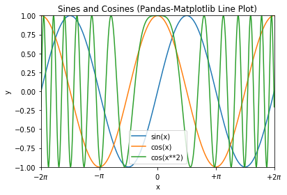
Example 3: Bar Chart
# Pandas-Matplotlib Bar Chart import matplotlib.pyplot as plt import numpy as np import pandas as pd # Setup DataFrame x = ['2020', '2021', '2022', '2023', '2024'] y = np.random.randint(1, 101, len(x)) # 5 values in [1, 100] df = pd.DataFrame({'Espresso': y}, index=x) df.index.name='Year' print(df.head()) # Plot bar chart ax = df.plot.bar(title='Coffee & Tea Sales (Pandas-Matplotlib Bar Chart)') ax.set_ylabel('Sales') plt.show()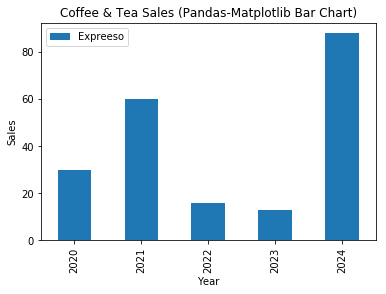
Example 4: Bar Chart (Grouped and Stacked)
# Pandas-Matplotlib Grouped and Stacked Bar Charts import matplotlib.pyplot as plt from matplotlib.colors import ListedColormap import numpy as np import pandas as pd # Setup x, y and Pandas DataFrame x = ['2020', '2021', '2022', '2023', '2024'] y1 = np.array([1, 6, 3, 5, 2]) y2 = np.array([2, 2, 4, 5, 1]) y3 = np.array([3, 3, 2, 3, 1]) ycmap1 = ListedColormap(['#5B9BD5', '#ED7D31', '#70AD47']) ycmap2 = ListedColormap(['#FF6666', '#66FF66', '#6666FF']) df = pd.DataFrame({'espresso': y1, 'Cappuccino': y2, 'Latte': y3}, index=x) df.index.name = 'Year' print(df.head()) # Show sample records # Create a figure with 2 subplots and get their handles fig, (ax0, ax1) = plt.subplots(2, 1) df.plot.bar(ax=ax0, figsize=(6.4, 6.4), cmap=ycmap1, title='Coffee & Tea Sales (Pandas-Matplotlib Grouped Bar Chart)') ax0.set_ylabel('Sales') df.plot.bar(ax=ax1, stacked=True, cmap=ycmap2, title='Coffee & Tea Sales (Pandas-Matplotlib Stacked Bar Chart)') ax1.set_ylabel('Sales') plt.tight_layout() # To prevent overlapping of subplots plt.show()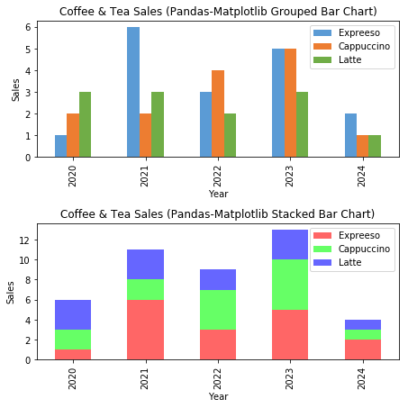
Example 5: Histogram (Bar Chart)
# Pandas-Matplotlib Histogram import matplotlib.pyplot as plt import numpy as np import pandas as pd # Set up Pandas DataFrame, for marks of [0, 100], in 10 bins y = np.random.normal(65, 15, 500) # Normal Distributed at mean and std dev df = pd.DataFrame({'Mark': y}) print(df.head()) # Setup bins and plot bins = np.arange(0, 101, 10) # bins are [0, 10), [10, 19), ... [90, 100] ax = df.plot.hist(bins=bins, width=8, xlim=(0, 100), legend=False, title='Histogram (Pandas-Matplotlib)') # Bar from x to x+8 ax.set_xlabel('Mark') ax.set_ylabel('Number of Students') ax.set_xticks(np.arange(5, 100, 10)-1) # 4, 14, 24, ... ax.set_xticklabels(['0-9', '10-19', '20-29', '30-39', '40-49', '50-59', '60-69', '70-79', '80-89', '90-100']) ax.tick_params(axis='x', rotation=90) plt.show()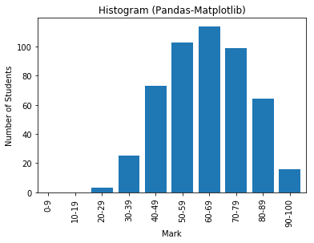
Example 6: Pie Chart
# Pandas-Matplotlib Pie Chart import matplotlib.pyplot as plt import numpy as np import pandas as pd # Setup Pandas DataFrame x = ['2020', '2021', '2022', '2023', '2024'] y = [5, 3, 6, 2, 3] df = pd.DataFrame({'Sales': y}, index=x) df.index.name = "Year" print(df.head()) explode = (0, 0, 0, 0.2, 0) # "explode" the forth slice by 0.2 ax = df.plot.pie(subplots=True, explode=explode, startangle=90, legend=False, title='Pie Chart (Pandas-Matplotlib)') plt.show()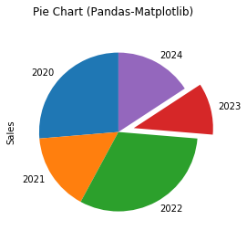
Example 7: Scatter Chart
# Pandas-Matplotlib Scatter Plot # for 2 categories of 25 points each, randomly generated import matplotlib.pyplot as plt import numpy as np import pandas as pd from matplotlib.colors import ListedColormap # Set up x, y and DataFrame xy1 = np.random.normal(8, 1, 50).reshape(-1, 2) # cat1: [x1, y1] 25 samples xy1 = np.column_stack((xy1, np.zeros(25))) # Add a column for cat xy2 = np.random.normal(4, 2, 50).reshape(-1, 2) # cat2: [x2, y2] 25 samples xy2 = np.column_stack((xy2, np.ones(25))) # Add a column for cat xy = np.vstack((xy1, xy2)) df = pd.DataFrame({'x': xy[:,0], 'y': xy[:,1], 'cat': xy[:,2]}) # Specify column names print(df.head()) cmap = ListedColormap(['#FF6666', '#6666FF']) # Need axes for setting xlabel (colorbar has another axes) ax = plt.subplot(1, 1, 1) df.plot.scatter(x='x', y='y', c='cat', ax=ax, colormap=cmap, title='Scatter Plot (Pandas-Matplotlib)') ax.set_xlabel('x') # very hard to set colorbar ticks and ticklabels plt.show()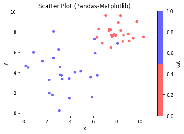
Machine Learning with scikit-learn
Terminology
Machine Learning: Development of algorithms that build models on the data, and make predictions.
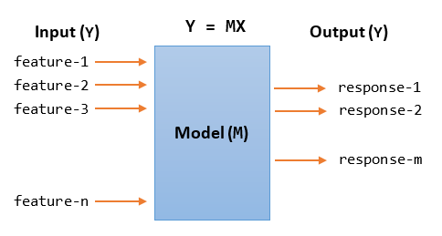Data: Data is usually organized in 2D tables. Each row is a sample (or observation, record, instance). Each column is a feature or a response.
- Features (or Attributes, Predictors, Independent Variables, Regressors, Covariate, Input, X): Features are inputs to the model. Features are organized in a
(num_samples, num_features)array. - Response (or Target, Outcome, Label, Dependent Variable, Output, Y): Response (or target) is the output the model, representing the outcome that we want to predict. The response array is usually 1-dimensional with length of
num_samples.
Types of Machine Learning: Machine Learning can be broadly classified into:
- Supervised Learning: The data consists of input features and output target we want to predict.
- Classification: the output target is categorical (i.e., it belongs to two or more categories or classes). Applicable methods include K-Nearest Neighbors (KNN) Classifier, Support Vector Machine Classifier (SVC).
- Regression: the output target is ordered and continuous. Applicable methods includes Linear Regression, Support Vector Machine Regression (SVR).
- Unsupervised Learning: The data does not contain the output target value.
- Clustering: to group the similar inputs into clusters (classes)
- Dimensionality Reduction: to reduce the dimensions of the inputs, such as the lower dimensional outputs convey much more information.
Training Set and Test Set: Data are split into training set (for building the model) and test set (for testing and evaluating the model).
Raw Data Types: Raw data can come in many types:
- Categorical:
- Nominal: no intrinsic order, e.g., cat A, B, C,...
- Ordinal: has a predetermined order, e.g., band 1, 2, 3 with ordering
- Numerical:
- discrete: can be counted with distinct values
- continuous: from analog measurements
Raw Data Formats: Raw data could take the format of:
- CSV (Comma-Separated Values)
- JSON (JavaScript Object Notation)
- XLS (Excel Spreadsheet)
- XML (Extensible Markup Language)
- HTML (Hypertext Markup Language)
- HDF (Hierarchical Data Format)
- SQL (Structure Query Language)
- Others
Data Analysis Process
The data analysis process consists of these stages:
- Problem identification and definition.
- Data preparation: gathering, extraction, cleaning, transformation.
- Data exploration and visualization.
- Predictive Modeling: classification models (categorical data), regression models (numeric data), clustering models (descriptive data)
- Model validation and testing: training set, validation (testing) set.
- Deployment and interpretation of predictive results.
The Iris Flower Dataset (for Supervised Classification)
The Iris Flower Dataset is used for the first time by Sir Ronald Fisher in 1936. It is often also called Anderson Iris Dataset, after the person who collected the data. The dataset has:
- 4 input features (the length and width of the sepals, and the length and width of the petals). Input features are numerical and continuous.
- 1 output target of 3 categories (species of iris - Iris silky, virginica Iris, and Iris versicolor). Target is categorical and nominal (unordered).
- 150 samples, 50 samples per output category, no missing data.
You can load the iris dataset from scikit-learn as follows:
>>> from sklearn import datasets >>> iris = datasets.load_iris() >>> type(iris) <class 'sklearn.utils.Bunch'> # Check out the dataset >>> iris {'data': array([[5.1, 3.5, 1.4, 0.2], # Input Features: NumPy's ndarray of 150x4 ...... [5.9, 3. , 5.1, 1.8]]), 'target': array([0, 0, 0, 0, ....]), # Output target [0, 1, 2]: NumPy's ndarray of 150 'target_names': array(['setosa', 'versicolor', 'virginica'], dtype='<U10'), 'DESCR': 'Iris Plants Database ....' 'feature_names': ['sepal length (cm)', 'sepal width (cm)', 'petal length (cm)', 'petal width (cm)']} >>> print(iris.DESCR) Data Set Characteristics: :Number of Instances: 150 (50 in each of three classes) :Number of Attributes: 4 numeric, predictive attributes and the class :Attribute Information: - sepal length in cm - sepal width in cm - petal length in cm - petal width in cm - class: - Iris-Setosa - Iris-Versicolour - Iris-Virginica :Summary Statistics: ============== ==== ==== ======= ===== ==================== Min Max Mean SD Class Correlation ============== ==== ==== ======= ===== ==================== sepal length: 4.3 7.9 5.84 0.83 0.7826 sepal width: 2.0 4.4 3.05 0.43 -0.4194 petal length: 1.0 6.9 3.76 1.76 0.9490 (high!) petal width: 0.1 2.5 1.20 0.76 0.9565 (high!) ============== ==== ==== ======= ===== ==================== # Check out the input features >>> iris.data array([[5.1, 3.5, 1.4, 0.2], ...]) # NumPy's 2D ndarray, numerical and continuous >>> type(iris.data) <class 'numpy.ndarray'> >>> iris.data.dtype dtype('float64') >>> iris.data.shape (150, 4) >>> iris.feature_names ['sepal length (cm)', 'sepal width (cm)', 'petal length (cm)', 'petal width (cm)'] # Check out the output target >>> iris.target array([0, 0, 0, 0, 0, 0, 0, 0, 0, ...]) # NumPy's 1D ndarray, categorical and nominal >>> type(iris.target) <class 'numpy.ndarray'> >>> iris.target.dtype dtype('int32') >>> iris.target.shape (150,) >>> iris.target_names array(['setosa', 'versicolor', 'virginica'], dtype='<U10')
Check the Statistics of the Categories
import numpy as np import pandas as pd from sklearn import datasets # Setup DataFrame iris = datasets.load_iris() # Shorten the feature names to fit the display for i in range(len(iris.feature_names)): iris.feature_names[i] = iris.feature_names[i][0:-5] df = pd.DataFrame(iris.data, columns=iris.feature_names) df['category'] = iris.target # Add the output target column
df.dtypes
sepal length float64 sepal width float64 petal length float64 petal width float64 category int32 dtype: object
# Print samples
df.head()
sepal length sepal width petal length petal width category 0 5.1 3.5 1.4 0.2 0 1 4.9 3.0 1.4 0.2 0 2 4.7 3.2 1.3 0.2 0 3 4.6 3.1 1.5 0.2 0 4 5.0 3.6 1.4 0.2 0
# Setup Pandas printing format for float
pd.options.display.float_format = '{:,.2f}'.format
# Describe ALL Categories
df.describe()
sepal length sepal width petal length petal width category
count 150.00 150.00 150.00 150.00 150.00
mean 5.84 3.06 3.76 1.20 1.00
std 0.83 0.44 1.77 0.76 0.82
min 4.30 2.00 1.00 0.10 0.00
25% 5.10 2.80 1.60 0.30 0.00
50% 5.80 3.00 4.35 1.30 1.00
75% 6.40 3.30 5.10 1.80 2.00
max 7.90 4.40 6.90 2.50 2.00
# Describe Category 0
print('Cat 0:', iris.target_names[0])
df.loc[df['category'] == 0].describe()
Cat 0: setosa
sepal length sepal width petal length petal width category
count 50.00 50.00 50.00 50.00 50.00
mean 5.01 3.43 1.46 0.25 0.00
std 0.35 0.38 0.17 0.11 0.00
min 4.30 2.30 1.00 0.10 0.00
25% 4.80 3.20 1.40 0.20 0.00
50% 5.00 3.40 1.50 0.20 0.00
75% 5.20 3.68 1.58 0.30 0.00
max 5.80 4.40 1.90 0.60 0.00
# Describe Category 1
print('Cat 1:', iris.target_names[1])
df.loc[df['category'] == 1].describe()
Cat 1: versicolor
sepal length sepal width petal length petal width category
count 50.00 50.00 50.00 50.00 50.00
mean 5.94 2.77 4.26 1.33 1.00
std 0.52 0.31 0.47 0.20 0.00
min 4.90 2.00 3.00 1.00 1.00
25% 5.60 2.52 4.00 1.20 1.00
50% 5.90 2.80 4.35 1.30 1.00
75% 6.30 3.00 4.60 1.50 1.00
max 7.00 3.40 5.10 1.80 1.00
# Describe Category 2
print('Cat 2:', iris.target_names[2])
df.loc[df['category'] == 2].describe()
Cat 2: virginica
sepal length sepal width petal length petal width category
count 50.00 50.00 50.00 50.00 50.00
mean 6.59 2.97 5.55 2.03 2.00
std 0.64 0.32 0.55 0.27 0.00
min 4.90 2.20 4.50 1.40 2.00
25% 6.23 2.80 5.10 1.80 2.00
50% 6.50 3.00 5.55 2.00 2.00
75% 6.90 3.18 5.88 2.30 2.00
max 7.90 3.80 6.90 2.50 2.00
Scatter Plot for Each of the Input Feature vs. Category
It is very hard to visualize the statistics of the categories. Let's do a scatter plot for each of the input feature vs. category.
# Scatter plot for each of the input features vs output category import matplotlib.pyplot as plt import numpy as np import pandas as pd from sklearn import datasets iris = datasets.load_iris() # Scatter plot on each of input feature columns fig, ax = plt.subplots(2, 2, figsize=(8.0, 6.4)) fig.suptitle('Input Feature vs. Category') for feature_col in [0, 1, 2, 3]: # for each feature ax_row, ax_col = feature_col//2, feature_col%2 ax[ax_row][ax_col].scatter(iris.data[:, feature_col], iris.target, c='red', s=8) ax[ax_row][ax_col].set_xlabel(iris.feature_names[feature_col]) ax[ax_row][ax_col].set_ylabel('category') ax[ax_row][ax_col].set_yticks([0, 1, 2]) ax[ax_row][ax_col].set_yticklabels([0, 1, 2]) # Overlay with the mean means = [iris.data[:, feature_col][iris.target==0].mean(), iris.data[:, feature_col][iris.target==1].mean(), iris.data[:, feature_col][iris.target==2].mean()] ax[ax_row][ax_col].scatter(means, [0, 1, 2], c='blue') fig.tight_layout() # Prevent subplots overlap fig.subplots_adjust(top=0.9) # Prevent figure-title overlaps plt.show()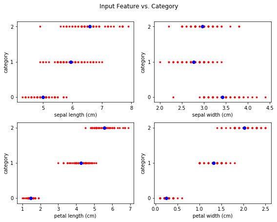
Observation: Each of input feature is closely related to the output category except sepal width.
- Sepal Length: cat 0 has the smallest, cat 2 has the largest.
- Sepal Width: not quite related.
- Petal Length: cat 0 has the smallest, cat 2 has the largest, clearly separated.
- Petal Width:
Correlation coefficient is not applicable to categorical nominal (unordered) data.
Scatter Plot of Sepal Length/Width vs. Category
# Scatter plot for sepal length and width vs. category import matplotlib.pyplot as plt from sklearn import datasets iris = datasets.load_iris() x_col = 0 # sepal length column y_col = 1 # sepal width column x = iris.data[:, x_col] y = iris.data[:, y_col] targets = iris.target target_names = iris.target_names feature_names = iris.feature_names # Hard code instead of using a loop for clarity plt.scatter(x[targets == 0], y[targets == 0], c='#FF6666', label=target_names[0]) plt.scatter(x[targets == 1], y[targets == 1], c='#66FF66', label=target_names[1]) plt.scatter(x[targets == 2], y[targets == 2], c='#6666FF', label=target_names[2]) plt.xlabel(feature_names[x_col]) plt.ylabel(feature_names[y_col]) plt.legend() plt.xlim(x.min()-0.5, x.max()+0.5) plt.ylim(y.min()-0.5, y.max()+0.5) plt.show()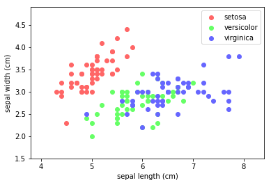
Observation: Cat 0 (setosa) is clearly separated, but Cat 1 (vesicolor) and Cat 2 (Virginica) overlap.
Scatter Plot of Petal Length/Width vs. Category
# Scatter plot for petal length vs petal width with legend and color settings import matplotlib.pyplot as plt from sklearn import datasets iris = datasets.load_iris() x_col = 2 # petal length column y_col = 3 # petal width column x = iris.data[:, x_col] y = iris.data[:, y_col] targets = iris.target target_names = iris.target_names feature_names = iris.feature_names plt.scatter(x[targets == 0], y[targets == 0], c='#FF6666', label=target_names[0]) plt.scatter(x[targets == 1], y[targets == 1], c='#66FF66', label=target_names[1]) plt.scatter(x[targets == 2], y[targets == 2], c='#6666FF', label=target_names[2]) plt.xlabel(feature_names[x_col]) plt.ylabel(feature_names[y_col]) plt.legend() plt.xlim(x.min()-0.5, x.max()+0.5) plt.ylim(y.min()-0.5, y.max()+0.5) plt.show()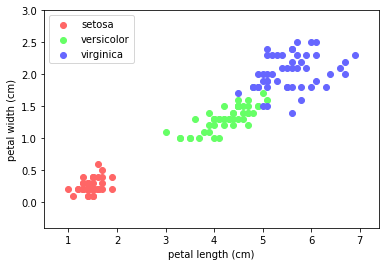
Observation: Cat 0 (setosa) is clearly separated. Cat 1 (vesicolor) and Cat 2 (Virginica) are reasonably separated.
K-Nearest Neighbor (KNN) Learning Algorithm
The KNN is among the simplest of all machine learning algorithms. It can be used for classification or regression. The steps are:
- Find the k nearest neighbors to the test sample and their labels/values.
- For classification, label the test sample by the majority vote. For regression, assign the average.
In the case of k=1, the test sample will follow its nearest neighbor.
The number of neighbors (k) can be:
- a user-defined constant (k-nearest neighbor learning).
- vary based on the local density of points (radius-based neighbor learning).
You could assign weights to the contributions of the neighbors, so that the nearer neighbors contribute more to the average/vote than the distant ones. A common weighting scheme assigns each neighbor a weight of 1/d, where d is the distance to the neighbor.
The distance could be measured in:
- Euclidean distance: most commonly used.
- Manhattan distance:
- Minkowski distance: The Minkowski distance is a metric in a normed vector space which can be considered as a generalization of both the Euclidean distance (p=2) and the Manhattan distance (p=1). 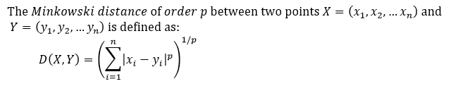
- Hamming distance: the Hamming distance between two strings of equal length is the number of positions at which the corresponding symbols are different.
KNN is:
- Non-Parametric: there is no assumption for underlying data distribution. KNN decision boundary could be irregular.
- a Non-generalizing Lazy Learner: there is no need for training of the model. It simply remembers all its training data, possible transformed into a fast indexing structure such as a Ball Tree or KD Tree. All computation is deferred until classification (known as lazy learner).
KNN suffers from "curse of dimensions" (Euclidean distance is useless in high dimensions because all vectors are almost equidistant to the search query vector). It is also sensitive to the local structure of the data.
KNN on Iris Dataset
Scikit-learn supports KNN via module sklearn.neighbors (@ https://scikit-learn.org/stable/modules/neighbors.html).
K-Nearest Neighbors (KNN) Supervised Classification
In supervised learning, you need to provide both the input features and output target.
scikit-learn implements two nearest neighbors classifiers:
KNeighborsClassifierimplements learning based on the k nearest neighbors of each query point, where k is an integer value specified by the user. The optimal choice of the value is highly data-dependent: in general a larger k suppresses the effects of noise, but makes the classification boundaries less distinct.RadiusNeighborsClassifierimplements learning based on the number of neighbors within a fixed radius r of each training point, where r is a floating-point value specified by the user. This is a better choice if the data is not uniformly sampled.
Three algorithms are supported: BallTree, KDTree, and a brute-force approach based on sklearn.metrices.pairwise (i.e., compare with each of the training samples), which can be chosen via keyword argument algorithm='auto'|'ball_tree'|kd_tree'|'brute'. When the default 'auto' is used, it attempts to determine the best approach from the training data.
>>> from sklearn.neighbors import KNeighborsClassifier
>>> help(KNeighborsClassifier)
KNeighborsClassifier(n_neighbors=5, weights='uniform', algorithm='auto', leaf_size=30,
p=2, metric='minkowski', metric_params=None, n_jobs=None, **kwargs)
# n_neighbors: number of neighbors to use by default for queries
# weights: 'uniform', 'distance' (weight points by the inverse of their distance), or a callable.
# algorithm: 'auto'|'ball_tree'|kd_tree'|'brute'
# leaf_size: Leaf size passed to BallTree or KDTree
# metric: distance measurement.
# n_jobs: the number of parallel jobs to run for neighbors search
>>> from sklearn.neighbors import RadiusNeighborsClassifier
>>> help(RadiusNeighborsClassifier)
RadiusNeighborsClassifier(radius=1.0, weights='uniform', algorithm='auto', leaf_size=30,
p=2, metric='minkowski', outlier_label=None, metric_params=None, n_jobs=None, **kwargs)
# radius: Range of parameter space to use by default for queries
Scikit-learn/SciPy provides many distance metrices:
- from
scikit-learn:['cityblock', 'cosine', 'euclidean', 'l1', 'l2', 'manhattan'] - from
scipy.spatial.distance:['braycurtis', 'canberra', 'chebyshev', 'correlation', 'dice', 'hamming', 'jaccard', 'kulsinski', 'mahalanobis', 'minkowski', 'rogerstanimoto', 'russellrao', 'seuclidean', 'sokalmichener', 'sokalsneath', 'sqeuclidean', 'yule']
Example: Iris Flower Dataset
# KNN Supervised Classification import numpy as np from sklearn import datasets iris = datasets.load_iris() # Prepare data (features and target) for training x = iris.data # features y = iris.target # Split the data into training set and test set from sklearn.model_selection import train_test_split x_train, x_test, y_train, y_test = train_test_split(x, y, test_size=0.15) # Randomized print('Number of Training Set samples:', len(x_train)) print('Number of Test Set samples:', len(x_test)) # KNN Supervised Classifier from sklearn.neighbors import KNeighborsClassifier n_neighbors, weights = 5, 'uniform'
knn = KNeighborsClassifier(n_neighbors=n_neighbors, weights=weights)
knn.fit(x_train, y_train) # Provide the features and target # Get the prediction on test set y_predict = knn.predict(x_test) # Compare prediction and actual print(y_predict == y_test) # Check Accuracy from sklearn import metrics print("Accuracy is:", metrics.accuracy_score(y_test, y_predict))
Number of Training Set samples: 127 Number of Test Set samples: 23 [ True False True True True True True False True True True True True True True True True True True True True True True] Accuracy is: 0.9130434782608695
Observation: With the training-testing set split of 85%:15%, 2 of the test set samples fail.
Try:
- Try
k(n_neighbors) of5,10,15 - Try
weights='distance'(instead of'uniform') - Use
10%,15%,20%for test set.
KNN Classifier Decision Boundary for Sepal Length/Width
# Plot the Decision Boundary using only 2 input features: Sepal length and width import numpy as np import matplotlib.pyplot as plt from matplotlib.colors import ListedColormap from sklearn import datasets, neighbors # Prepare data for training - only use sepal length and width iris = datasets.load_iris() xy = iris.data[:, 0:2] # Input - sepal length (x) and width (y) z = iris.target # Output - species x_min, x_max = xy[:,0].min()-0.5, xy[:,0].max()+0.5 y_min, y_max = xy[:,1].min()-0.5, xy[:,1].max()+0.5 # Setup color meshgrid step = 0.02 xx, yy = np.meshgrid(np.arange(x_min, x_max, step), np.arange(y_min, y_max, step)) cmap_rgb_light = ListedColormap(['#FFCCCC','#CCFFCC','#CCCCFF']) # for 3 classes # Run KNN supervised classifier n_neighbors = 15 # default is 5 weights = 'uniform' # default, to try 'distance' knn = neighbors.KNeighborsClassifier(n_neighbors=n_neighbors, weights=weights) knn.fit(xy, z) # Features and target # Run prediction on all points on the meshgrid z_predict = knn.predict(np.c_[xx.ravel(), yy.ravel()]) # column stack z_predict = z_predict.reshape(xx.shape) # back to 2D # Plot color mesh on prediction (decision boundary) plt.pcolormesh(xx, yy, z_predict, cmap=cmap_rgb_light) # Overlay the training points x, y = xy[:, 0], xy[:, 1] cmap_rgb_dark = ListedColormap(['#FF4444','#44FF44','#4444FF']) # darker plt.scatter(x, y, c=z, cmap=cmap_rgb_dark, s=12) # s: marker size plt.xlim(xx.min(), xx.max()) plt.ylim(yy.min(), yy.max()) plt.xlabel(iris.feature_names[0]) plt.ylabel(iris.feature_names[1]) plt.title('KNN Classifier Decision Boundary on Sepal length and width') plt.show()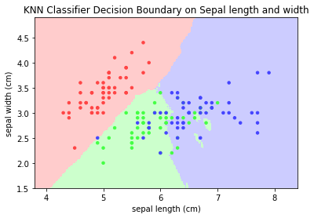
Notes:
- The decision boundary is irregular.
- Try other values for
n_neighborsandweights='distance'. - Try on petal length and width
KNN - Unsupervised Nearest Neighbors
In unsupervised learning, you provide the input features, but do not need to provide the output target.
The sklearn.neighbors.NearestNeighbors implements unsupervised nearest neighbors learning. It acts as a uniform interface to three algorithms: BallTree, KDTree, and a brute-force approach based on sklearn.metrices.pairwise (i.e., compare with each of the training samples), which can be chosen via keyword argument algorithm='auto'|'ball_tree'|kd_tree'|'brute'. When the default 'auto' is used, it attempts to determine the best approach from the training data.
>>> from sklearn.neighbors import NearestNeighbors
>>> help(NearestNeighbors)
NearestNeighbors(n_neighbors=5, radius=1.0, algorithm='auto', leaf_size=30,
metric='minkowski', p=2, metric_params=None, n_jobs=None, **kwargs)
# n_neighbors: number of neighbors to use by default queries
# radius: range of parameter space to use by default queries
# algorithm: 'auto'|'ball_tree'|kd_tree'|'brute'
# leaf_size: Leaf size passed to BallTree or KDTree
# metric: distance measurement.
# n_jobs: the number of parallel jobs to run for neighbors search
Example: Iris Flower Dataset
# KNN - Find K Nearest Neighbors via Unsupervised Learning import numpy as np from sklearn import datasets iris = datasets.load_iris() from sklearn.neighbors import NearestNeighbors knn = NearestNeighbors() # Construct an instance of KNN default k=5, weights='uniform' knn.fit(iris.data) # Only training sample, no target for unsupervised training # Find the K-nearest neighbors for a test sample test = np.array([5.3, 2.1, 2.2, 2.4]) test = test.reshape(1, -1) # reshape to column vector results = knn.kneighbors(test, 7) print(results) # (distances, indexes) of the nearest neighbors print(iris.data[results[1][0]]) # Get the features of the nearest neighbors print(iris.target[results[1][0]]) # Get the target of the nearest neighbors
(array([[1.59059737, 1.81659021, 1.8493242 , 1.93649167, 1.97484177,
2.01494417, 2.06397674]]), # distance to the nearest neighbors, sorted
array([[98, 93, 57, 60, 64, 79, 59]], # indexes of the nearest neighbors
dtype=int64))
[[5.1 2.5 3. 1.1] # features
[5. 2.3 3.3 1. ]
[4.9 2.4 3.3 1. ]
[5. 2. 3.5 1. ]
[5.6 2.9 3.6 1.3]
[5.7 2.6 3.5 1. ]
[5.2 2.7 3.9 1.4]]
[1 1 1 1 1 1 1] # target
Reducing the Feature's Dimension via PCA
# Reduce the feature dimension from 4 to 3 via PCA import numpy as np import matplotlib.pyplot as plt from matplotlib.colors import ListedColormap from mpl_toolkits.mplot3d import Axes3D from sklearn import datasets, decomposition iris = datasets.load_iris() # Run PCA iris_reduced = decomposition.PCA(n_components=3).fit_transform(iris.data) print('Sample output records') print(iris_reduced[:5]) np.savetxt('iris_reduced.csv', iris_reduced, delimiter=',') # Save for further operation # Scatter Plot 3D fig = plt.figure() ax = Axes3D(fig) ax.set_title('Iris Dataset reduced by PCA', size=14) cmap_rgb_dark = ListedColormap(['#FF4444','#44FF44','#4444FF']) ax.scatter(iris_reduced[:,0], iris_reduced[:,1], iris_reduced[:,2], c=iris.target, cmap=cmap_rgb_dark) ax.set_xlabel('1st eigenvector') ax.set_ylabel('2nd eigenvector') ax.set_zlabel('3rd eigenvector') plt.show()
Sample records
[[-2.68412563 0.31939725 -0.02791483] # 3D feature
[-2.71414169 -0.17700123 -0.21046427]
[-2.88899057 -0.14494943 0.01790026]
[-2.74534286 -0.31829898 0.03155937]
[-2.72871654 0.32675451 0.09007924]]
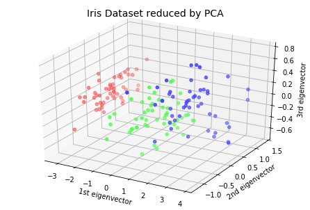
KNN Classifier with Reduced Dimension
# KNN Supervised Classification on reduced dimension import numpy as np from sklearn import datasets iris = datasets.load_iris() # Prepare data (features and target) for training x = np.loadtxt('iris_reduced.csv', delimiter=',') # Retrieved from save file y = iris.target # Split the data into training set and test set from sklearn.model_selection import train_test_split x_train, x_test, y_train, y_test = train_test_split(x, y, test_size=0.15) # Randomized print('Number of Training Set samples:', len(x_train)) print('Number of Test Set samples:', len(x_test)) # KNN Supervised Classifier from sklearn.neighbors import KNeighborsClassifier n_neighbors, weights = 10, 'distance' knn = KNeighborsClassifier(n_neighbors=n_neighbors, weights=weights) knn.fit(x_train, y_train) # Provide the features and target # Get the prediction on test set y_predict = knn.predict(x_test) # Compare prediction and actual print(y_predict == y_test) # Check Accuracy from sklearn import metrics print('Accuracy is:', metrics.accuracy_score(y_test, y_predict))
Number of Training Set samples: 127 Number of Test Set samples: 23 [ True True True True True True True True True True True True True True True True True True True True True True True] Accuracy is: 1.0
Observations: With the reduced dimension, the accuracy is 100%.
Nearest Centroid Classifier
The NearestCentroid classifier is a simple algorithm that represents each class by the centroid of its members. It is similar to the label updating phase of the sklearn.KMeans algorithm. It has no parameters to choose, making it a good baseline classifier. It does, however, suffer on non-convex classes, as well as when classes have drastically different variances, as equal variance in all dimensions is assumed.
NearestCentroid(metric='euclidean', shrink_threshold=None)
For example,
# Plot the Decision Boundary for Nearest Centroid Classifier # using only 2 input features: Sepal length and width import numpy as np import matplotlib.pyplot as plt from matplotlib.colors import ListedColormap from sklearn import datasets, neighbors # Prepare data for training - only use sepal length and width iris = datasets.load_iris() xy = iris.data[:, 0:2] # Input - sepal length (x) and width (y) z = iris.target # Output - species x_min, x_max = xy[:,0].min()-0.5, xy[:,0].max()+0.5 y_min, y_max = xy[:,1].min()-0.5, xy[:,1].max()+0.5 # Setup color meshgrid step = 0.02 xx, yy = np.meshgrid(np.arange(x_min, x_max, step), np.arange(y_min, y_max, step)) cmap_rgb_light = ListedColormap(['#FFCCCC','#CCFFCC','#CCCCFF']) # for 3 classes # Run Nearest Centroid Classifier knn = neighbors.NearestCentroid() knn.fit(xy, z) # Features and target # Run prediction on all points on the meshgrid z_predict = knn.predict(np.c_[xx.ravel(), yy.ravel()]) # column stack z_predict = z_predict.reshape(xx.shape) # back to 2D # Plot color mesh on prediction (decision boundary) plt.pcolormesh(xx, yy, z_predict, cmap=cmap_rgb_light) # Overlay the training points x, y = xy[:, 0], xy[:, 1] cmap_rgb_dark = ListedColormap(['#FF4444','#44FF44','#4444FF']) # darker plt.scatter(x, y, c=z, cmap=cmap_rgb_dark, s=12) # s: marker size plt.xlim(xx.min(), xx.max()) plt.ylim(yy.min(), yy.max()) plt.xlabel(iris.feature_names[0]) plt.ylabel(iris.feature_names[1]) plt.title('Nearest Centroid Classifier Decision Boundary on Sepal length and width') plt.show()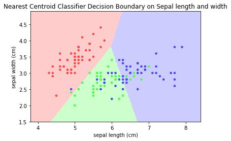
Nearest Shrunken Centroid Classifier
The NearestCentroid classifier has a parameter shrink_threshold, which implements the nearest shrunken centroid classifier that removes noisy features from the classification. The value of each feature for each centroid is first divided by the within-class variance of that feature. It it then reduced by shrink_threshold. If the resultant value crosses zero, it is set to zero. In effect, this removes the feature from affecting the classification. This is useful for removing noisy features.
Example: Modify the above program for shrink_threshold of 0.1, 0.2, 0.3.
[TODO] Compare
KNN Regressors
Neighbors-based regression can be used in cases where the data labels are continuous rather than categorical. The label assigned to a query point is computed based on the average of its nearest neighbors.
scikit-learn implements two nearest neighbors regressors: KNeighborsRegressor based on the nearest k neighbors of each query point, where k is an integer value specified by the user. RadiusNeighborsRegressor based on the neighbors within a fixed radius r of the query point, where r is a floating-point value specified by the user.
Example: [TODO] Iris Flower Dataset are not applicable to regression as its target is categorical, not continuous.
Correlation
[TODO]
Wine Dataset
This dataset is the result of a chemical analysis of wines grown in the same region in Italy using three different cultivars.
- 13 Input Features: 'alcohol', 'malic_acid', 'ash', 'alcalinity_of_ash', 'magnesium', 'total_phenols', 'flavanoids', 'nonflavanoid_phenols', 'proanthocyanins', 'color_intensity', 'hue', 'od280/od315_of_diluted_wines', 'proline'.
- Target: 3 type of cultivars ('class_0', 'class_1', 'class_2')
- Samples: 178 (class_0: 59, class_1: 71, class_2: 48)
You can load the Wine dataset from scikit-learn's datasets:
from sklearn import datasets wine = datasets.load_wine() print(wind.DESCP)
Wine recognition dataset
------------------------
:Number of Instances: 178 (50 in each of three classes)
:Number of Attributes: 13 numeric, predictive attributes and the class
:Attribute Information:
- Alcohol
- Malic acid
- Ash
- Alcalinity of ash
- Magnesium
- Total phenols
- Flavanoids
- Nonflavanoid phenols
- Proanthocyanins
- Color intensity
- Hue
- OD280/OD315 of diluted wines
- Proline
- class:
- class_0
- class_1
- class_2
:Summary Statistics:
============================= ==== ===== ======= =====
Min Max Mean SD
============================= ==== ===== ======= =====
Alcohol: 11.0 14.8 13.0 0.8
Malic Acid: 0.74 5.80 2.34 1.12
Ash: 1.36 3.23 2.36 0.27
Alcalinity of Ash: 10.6 30.0 19.5 3.3
Magnesium: 70.0 162.0 99.7 14.3
Total Phenols: 0.98 3.88 2.29 0.63
Flavanoids: 0.34 5.08 2.03 1.00
Nonflavanoid Phenols: 0.13 0.66 0.36 0.12
Proanthocyanins: 0.41 3.58 1.59 0.57
Colour Intensity: 1.3 13.0 5.1 2.3
Hue: 0.48 1.71 0.96 0.23
OD280/OD315 of diluted wines: 1.27 4.00 2.61 0.71
Proline: 278 1680 746 315
============================= ==== ===== ======= =====
:Missing Attribute Values: None
:Class Distribution: class_0 (59), class_1 (71), class_2 (48)
KNN Supervised Classifier
# KNN Classifier for Wine dataset from sklearn import datasets wine = datasets.load_wine() # Split data into training set and test set from sklearn.model_selection import train_test_split x_train, x_test, y_train, y_test = train_test_split( wine.data, wine.target, test_size=0.2) # Generate KNN Classifier model from sklearn.neighbors import KNeighborsClassifier knn = KNeighborsClassifier(n_neighbors=15, weights='distance') # Train the model using the training sets knn.fit(x_train, y_train) # Feature, target # Predict the response for test dataset y_pred = knn.predict(x_test) # Evaluate model print(y_pred == y_test) # Check predication results from sklearn import metrics print('Accuracy:', metrics.accuracy_score(y_test, y_pred))
[ True True True False True True True True False True True True False False True True False True True False False True False False False True True True True False True True True True True False] Accuracy: 0.6666666666666666
Observations: Accuracy is 66%.
Case Studies
Case Study 1
[TODO]
Case Study 2
[TODO]
REFERENCES & RESOURCES
- Scikit-Learn Documentation @ https://scikit-learn.org/stable/documentation.html.
- Fabio Nelli, Python Data Analytics, Apress, 2015.